‘확인한 사실’은 원문에서 확인한 내용이에요. ‘해석’은 그 사실을 연결한 판단이고, ‘실험 제안’은 앞으로 검증할 설계예요. 공개 자료만 읽은 게임을 직접 플레이한 것처럼 쓰거나, 한 시점의 순위를 장르 전체의 흥행 공식으로 설명하지 않아요.
AI 도구와 기술
게임 AI 스킬·도구 소식 · 제작 도구 중심 확장
게임 에셋을 만들고 엔진에 적용하는 AI 도구를 살펴봐요
스킬뿐 아니라 2D·3D 에셋, 리깅·표정, 사운드, 반복 작업 자동화를 함께 조사했어요. 에셋은 그림이나 모델처럼 게임에 쓰는 재료이고, 리깅은 3D 캐릭터가 움직이도록 뼈대와 연결을 만드는 작업이에요. 이번 호는 Codex·Claude 게임 개발 스킬 8개와 신규 관찰 1개를 먼저 비교하고, 이어서 도구·서비스·공개 모델 15개를 살펴봐요.
게임 자산의 제작 흐름같은 입력으로 만든 결과도 수정과 엔진 연결까지 확인한 뒤 선택해요.참조 준비 → 생성·수정 → 엔진 확인 · image_gen 생성 개념도 · 실제 제품 화면·실측 결과가 아니에요.
별도로 읽는 Codex·Claude 게임 개발 스킬
게임 개발에 활용할 에이전트 스킬을 살펴봐요
제작 도구가 그림·코드·소리를 만든다면, 스킬은 그 도구를 언제 쓰고 결과를 어떻게 검사할지 알려 주는 작업 지침이에요. AI가 게임 엔진의 도구를 사용할 수 있게 연결하는 방식인 MCP와 실행 스크립트를 함께 제공하는 묶음도 있어요. 이번에는 실제 SKILL.md가 있는 8개 후보와 신규 관찰 1개를 골랐어요.
이번 주 새 내용: Blender 스킬 6개 추가, Unity unity-pipeline 공개 커밋, Roblox 경제 설계 스킬 추가, sprite-gen 반복 영상 처리 변경을 확인했어요. 기존에 유명한 스킬과 이번 주 추가·수정을 구분했어요.
무엇을 확인했나요? README·실제 스킬 파일·릴리스/커밋·라이선스를 읽었어요. 설치·생성·엔진 실행은 하지 않았으므로 아래 평가는 문헌에 근거한 도입 후보예요. 스킬 코드의 무료 공개, 코딩 에이전트 사용료, 외부 생성 API·서버 비용, 결과물 이용 조건은 따로 봐야 해요.
1 → 결과물 하나 선택기획표, 움직이는 캐릭터, 검사한 3D 소품, 실행 로그 중 무엇이 필요한지 정해요.
2 → 해당 스킬과 조건 확인지원 에이전트·엔진 버전·선행 도구·라이선스를 읽고 꼭 필요한 스킬부터 골라요.
3 → 실행 결과로 비교완료 기준과 오류를 기록해요. 아직 직접 시험하지 않은 후보의 시간 절감·품질 점수를 만들지 않아요.
표를 읽기 전에 두 용어만 구분해요. CLI는 명령어를 입력해 프로그램을 조작하는 도구이고, 라우터는 작업에 맞는 스킬을 찾아주는 안내 역할이에요. 문서에 지원한다고 적힌 것과 직접 실행해 확인한 것은 구분해 읽어요.
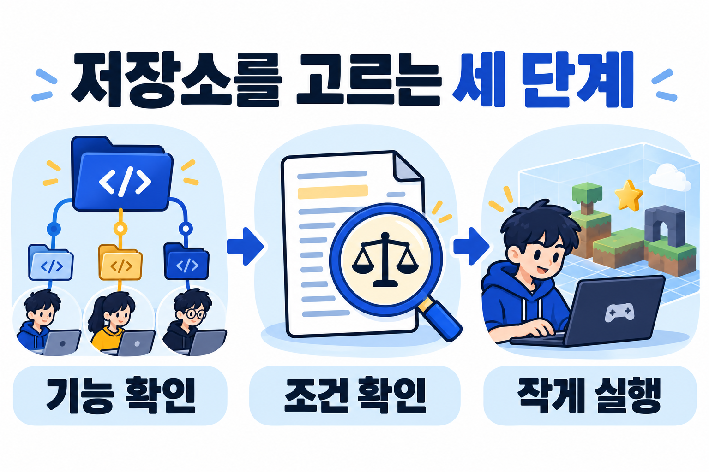
기능 확인 → 조건 확인 → 작게 실행 · AI 생성 개념도이며 실제 스킬의 성능이나 결과 화면이 아니에요.
게임 개발 스킬 9개 한눈에 비교
만들고 싶은 결과에서 출발해요. ●는 이 호에서 먼저 살펴볼 작업이며, —는 미지원 판정이 아니에요. 신규 관찰인 Edgegap은 추천 순위에 넣지 않았어요.
도입 부담·한계 Scenario 계정·MCP 연결과 모델별 비용 및 결과물 이용 조건을 따로 확인해야 해요.
이런 사람에게 캐릭터 애니메이션의 일관성과 내보내기를 살펴보려는 학생
작게 시도 대기와 걷기 두 상태의 방향·프레임 수·배경 투명 조건을 적어 비교해요.
Scenario 공식 · 서비스 MCP와 전문가 스킬 묶음 · 문서상 안내 · 직접 설치·실행하지 않았고, 이 스킬로 실제 제작된 게임도 검증하지 않았어요. 저장소 원문 · 스킬 원문
기능·실행 조건과 기존 조사 자세히 보기
scenario-game-assets·scenario-sprite-animation이 게임 자산과 프레임 흐름을 안내해요. Scenario MCP용 스킬과 로컬 Blender·엔진 전문 스킬군을 구분해요. 최신 릴리스는 설치 버전 고정·설정 안내 수정이며 새로운 생성 모델 출시 소식은 아니에요.
실행 조건·비용 MIT. Scenario 생성 경로는 계정·MCP 연결과 서비스 비용이 별도예요. 로컬 전문 스킬은 해당 앱이 필요하며 스킬 묶음별 README의 검증 범위가 달라요.
처음 해볼 작업 캐릭터 한 명의 대기·걷기 상태를 요청하고 같은 외형, 프레임 수, 알파·내보내기 조건을 먼저 적어요.
선택할 때 볼 점 서비스 도구와 스킬 저장소는 별개로 비교해요. 생성물 권리와 비용은 선택 모델·계정 조건을 다시 확인해요.
sprite-gen 공식 README의 제작 예시예요. 한국어 설명 · 제작자 시연 영상. 직접 만든 결과물이나 독립 성능 비교는 아니에요.Blender 스킬 제작자의 사용 전후 비교 페이지예요. 제작자 자체 예시이며 다른 모델·작업의 성능까지 보장하지 않아요.
유튜브 원문 ↗ · 공개 시연 프롬프트 ↗. README에 연결된 제작자 시연이에요. 이번 조사에서 영상 전체를 시청하거나 같은 결과를 재현하지는 않았어요.
조사 방법·한계 GitHub의 claude game skills, codex game skills, godot skills, unreal skills 검색을 별 수순으로 각각 상위 8개씩 확인하고 중복을 제거한 뒤 게임 제작 관련성을 검토했어요. Unity·Edgegap 공식 저장소를 추가 확인했어요. 전체 생태계 순위가 아니며 별 수 증가의 과거 기준점은 없어요. Edgegap은 별 0개인 신규 관찰 대상으로 인기 추천과 구분했어요. 일반 코딩·웹·보안 지침을 게임 개발 전용 스킬로 섞지 않았어요. 확인일 2026.10.31.
확인한 이번 주 릴리스: ComfyUI v0.43.0은 10월 27일 공개됐어요. 새 Meshy·SFX 연동과 반복 작업 노드를 게임 제작 흐름에 연결해 볼 수 있어요. 유료 API 연동과 내 컴퓨터에서 실행하는 공개 코드를 구분해요. 공개 코드는 프로그램의 소스가 공개됐다는 뜻이지, 모든 관련 모델과 서비스가 무료라는 뜻은 아니에요.
공개 목록에서 발견: 10월 26일자 Hugging Face 주간 추천에서 Hi3Dv1을 확인했어요. Space의 마지막 수정은 10월 23일이며, 주간 추천 날짜를 모델 출시일로 쓰지 않아요.
현재 기능을 새로 확인한 기존 후보: SpriteGen, VARCO 3D, TRELLIS.2와 NVIDIA 도구 등이에요. 새로 조사했다는 이유로 모두 이번 주 신제품이라고 소개하지 않아요.
관심도 관측: GitHub 화면에서 TRELLIS.2 약 12.6k, ComfyUI 약 144k 별을 확인했어요. 전체 별 수는 주간 증가·사용자 수·품질 점수가 아니며 게임 개발 도구의 인기 순위를 뜻하지 않아요.
AI와 코드로 만드는 픽셀 이펙트
불꽃, 얼음 마법, 돌진 뒤에 남는 잔상도 코드로 만들 수 있어요. 여기서 VFX는 공격·피격·날씨 같은 장면을 보여 주는 시각 효과예요. AI가 쓴 효과 코드를 실제로 렌더하고, 눈으로 비교하며 다듬는 제작 방식을 살펴볼 두 자료를 추가했어요.
2026.11.02 보완 조사 · 원래 10월 31일 호와 확인 시점이 달라요. 아래 두 자료는 기존 15개 도구 필터와 별도로 정리한 추가 사례예요. 인기·성능 순위는 아니에요.
아래는 공식 README의 명령 예시예요. 설치가 준비된 테스트용 사본에서 사용할 수 있으며, 이 리포트가 실행한 기록은 아니에요.
node tools/render.mjs ice/frost-nova --sheet
문서는 투명 PNG와 Aseprite 방식의 프레임 JSON 출력을 안내해요. 프레임 영역·재생 시간·기준점(pivot)을 확인하고, 픽셀 필터링·반복 여부를 엔진에서 맞춰야 해요.
Sprite Fusion: 효과 코드와, 결과를 고치는 방법
왜 골랐나요? 효과 소스뿐 아니라 여러 시안을 렌더하고, 마음에 드는 방향을 고른 뒤 세부 움직임을 고치는 과정을 설명해요. 프롬프트 한 번으로 끝내기보다 내가 원하는 움직임과 품질 기준을 세우는 공부에 좋아요.
출처: Sprite Fusion·Hugo Duprez, 공식 제작 글의 시연 포스터. 리포트의 생성 이미지나 실습 결과가 아니에요. 공식 VFX 라이브러리에서 효과 더 보기공식 제작자 글에 실린 효과 영상 보기
제작자의 공개 시연이며 전체 시청·재현·성능 측정은 하지 않았어요. 재생되지 않으면 공식 글에서 확인하세요.
핵심 자료
불·얼음·비·돌진 잔상 등의 효과 코드와 개별 다운로드를 제공해요. 별도 제작 글은 Claude 같은 코딩 에이전트로 여러 시안을 만들고 직접 비교하는 방법을 설명해요.
엔진 적용
공식 FAQ는 효과를 의존성 없는 TypeScript 파일로 설명해요. JS/TS 게임에서는 코드로 연결하고, Unity·Godot 같은 다른 환경에서는 언어에 맞게 옮기거나 프레임을 시트로 저장하는 작업이 필요해요. pixelfx의 시트 내보내기 명령을 Sprite Fusion 파일에 그대로 쓰는 것은 아니에요.
라이선스·비용
공식 VFX 페이지는 효과 코드의 MIT·상업 이용 가능을 안내해요. 재배포할 때는 다운로드 안의 고지와 포함 파일의 조건을 다시 확인하세요. 이 조건이 Sprite Fusion의 유료 생성기·API·사이트 전체에 적용되는 것은 아니에요. MCP 접속·인증·현재 요금은 이번 보완에서 시험하지 않았어요.
장점·한계
효과의 크기·색·타이밍을 설명하며 고치는 방법을 배울 수 있어요. 이미지 생성 모델이나 모든 엔진에 바로 넣는 플러그인은 아니에요. ZIP 내부 라이선스·포팅·실행 성능은 직접 검증하지 않았어요.
효과 코드를 연결해 재생해요. 갱신 주기, 투명도·색 버퍼, 캐릭터 앞뒤의 그리기 순서와 동시 효과 수를 확인해요.
Unity·Godot 등
pixelfx는 PNG+JSON 내보내기 경로부터 살펴봐요. Sprite Fusion은 코드 포팅 또는 별도 프레임 추출이 필요해요. 프레임 순서·재생 속도·기준점·화면 밝기·픽셀 필터링을 실제 엔진에서 확인해요.
효과 하나 고르기입력·길이·색·반복 조건을 정해요.
시안 렌더하기같은 조건에서 변형을 비교해요.
눈으로 고치기타이밍·가독성·경계를 확인해요.
엔진에서 확인하기플레이 화면과 실행 비용을 확인해요.
위 흐름은 실습 제안이에요. pixelfx는 README와 NOTICE에서 Sprite Fusion의 방법과 일부 코드 출처를 밝혀요. 서로 관련된 자료이므로 독립적인 유행 근거 두 건으로 부풀리지 않아요. 저장소 생성일이나 이번 발견일을 정식 버전 출시일로 쓰지 않았어요.
보완 조사 요약 · 이미지 출처·이용 고지. 공식 원문과 데모를 확인했으며, 라이브러리 설치·코드 수정·내보내기·엔진 호환·성능 측정은 직접 하지 않았어요.
Scenario 3D Collection · 모델과 제작 기록을 함께 살펴봐요
게임에 쓸 소품을 찾거나 AI가 만든 3D 결과를 공부할 때 참고할 공개 자산·메타데이터 모음이에요. 완성 파일뿐 아니라 원본 이미지·생성 설정·출력 경로를 함께 볼 수 있다는 점 때문에 골랐어요. 생성기 코드나 모델 가중치가 모두 오픈소스로 공개됐다는 뜻은 아니에요.
2026.11.02 추가 확인 · 신규 관찰/기존 참고 · 기존 15개 도구 필터와 별도로 소개해요. 이번 주 새 출시로 집계하지 않았어요.
예제 1,342개 · 출력 파일 1,500개 · 전체 표시 용량 38.7GB예요. README의 ‘약 39GB’에는 미리보기와 제공 가능한 입력 자료도 포함돼요. 예제 수와 파일 수는 서로 다른 값이며 모든 항목이 같은 형식의 게임용 모델은 아니에요.
Scenario 제공 미리보기 · Meshy image-to-3D 예제 · CC BY 4.0 · 원본 그대로, 수정 없음. 이 리포트가 직접 생성·렌더한 결과는 아니에요. 원자료·출처 고지 · 라이선스
무엇을 참고할 수 있나요?
Hugging Face의 메타데이터를 직접 조회해 52개 모델 식별자, 합계 1,342행을 확인했어요. Meshy·Tripo·Rodin 계열과 Claude Opus 5.5·GPT-6 Astra 식별자도 포함돼요. 이는 서로 다른 제작 경로의 목록이며 같은 조건의 성능 비교나 추천 순위는 아니에요.
입력 자료
원본 이미지와 생성 프롬프트, 생성 설정을 참고해요. inputs.settings는 JSON 형식의 텍스트예요. 빠진 값은 null이며 모든 예제의 프롬프트·설정이 완전한 것은 아니에요.
Parquet 메타데이터는 1행이 1예제인 표예요. 원본 모델과 입력 이미지는 별도 파일이라 표만 받았다고 모델까지 받은 것은 아니에요.
공식 데이터 뷰어에서 모델·프롬프트·설정을 살펴보고 파일 목록에서 필요한 자료를 고를 수 있어요. 전체 38.7GB를 먼저 내려받을 필요는 없어요.
1,500개 출력 파일의 형식
GLB1,271개
Blender137개
SPZ41개
PLY23개
VOX21개
FBX7개
막대 길이는 출력 파일 1,500개 중 비중이에요. 원문이 공개한 형식별 개수이며 품질·속도·게임 호환성 점수가 아니에요. 수치는 텍스트로도 읽을 수 있어요.
GLB·FBX는 메시와 재질을 가져오는 경로를 확인하고, Blender 파일은 장면·노드·의존 파일을 살펴봐요. SPZ·PLY·VOX는 스플랫·포인트·복셀 등 파일의 실제 내용을 확인해야 해요. 같은 3D 자료라도 엔진이 읽는 방식은 달라요.
무료 공개 범위와 이용 조건
본 컬렉션은 CC BY 4.0으로 안내하며 Scenario 출처를 표시하도록 요구해요. 적용 자료는 상업적 공유·변형이 가능하지만 출처·원문·라이선스 링크·수정 여부와 제공된 고지를 유지해야 해요. 원본 LICENSE의 ‘별도 표시가 있는 경우 제외’ 단서와 항목별 조건도 확인해요. 생성 API와 유료 서비스까지 무료가 되는 것은 아니에요.
크레딧 예시와 별도 Hunyuan 컬렉션의 차이
크레딧 초안: 3D asset: Scenario — Scenario 3D Collection — CC BY 4.0 — [원문 링크] — 수정: [실제 수정한 내용 또는 없음]. 제공된 추가 고지도 함께 남겨요. 출처 표시가 Scenario의 후원을 뜻하는 것처럼 쓰지 않아요.
Hunyuan 자료 393개는 별도 컬렉션이에요. 공식 카드상 일부 Tencent 커뮤니티 라이선스는 대한민국·EU·영국에 적용되지 않으며, 별도 컬렉션 전체는 AI 모델 학습·개선에 이용할 수 없어요. Pro 자료도 별도 조건이고 다운로드에는 승인·인증이 필요해요. 본 컬렉션의 CC BY 4.0과 합쳐 설명하면 안 돼요.
CC BY 4.0이 상표·초상 등 다른 권리나 비침해·품질까지 보증하는 것은 아니에요. 공식 이용 조건을 함께 확인하세요. Hunyuan의 인증 뒤 개별 LICENSE·NOTICE는 이번에 열람하지 않았어요.
소품 하나로 엔진 적용을 확인해요
고르기미리보기·입력·라이선스를 보고 장면에 맞는 예제 하나와 파일 형식을 골라요.
파일 확인필요한 파일만 받아 해시·메시·재질·텍스처를 확인해요. Blender 파일은 자동실행을 끄고 복사본에서 열어요.
엔진에 연결사용 엔진·버전에서 지원하는 가져오기나 변환 경로를 확인하고 스케일·피벗·재질·충돌을 맞춰요.
장면에서 비교목표 기기의 예산에 맞춰 폴리곤·텍스처·조명을 점검하고 실제 바꾼 내용과 크레딧을 기록해요.
이 흐름은 학습을 위한 편집 제안이에요. 원문은 구조 검사와 Blender 파일 137개의 로딩을 안내하면서, 장면 1개에 텍스처 2개가 빠졌다고 공개했어요. 렌더·애니메이션 품질을 인증한 결과는 아니며 이 리포트에서도 전체 모델·엔진 호환성을 시험하지 않았어요.
빠르게 시작하는 작은 과제: 권리가 확인된 내 캐릭터 기준 이미지 한 장으로 표정 3종, 배경의 낮·밤 2종, 짧은 영상 콘티 1개를 비교해요. 개수는 학습용 제안이며 작업 시간은 보장하지 않아요. 모델·입력·설정·생성 대기·수정 시간·실패 결과도 함께 기록해요.
게임용 마무리: 배경 타일의 이음새, 투명 PNG의 가장자리, 캐릭터 프레임의 크기, 영상 루프·코덱·파일 크기를 확인해요. AI가 타일·레이어·알파·애니메이션 시트를 제공하는지는 도구별로 다시 확인해요. 정지 이미지와 영상, 실제 조작 가능한 게임 자산을 구분해요.
무료 여부와 함께 게임 제작에 쓸 수 있는지 확인해요
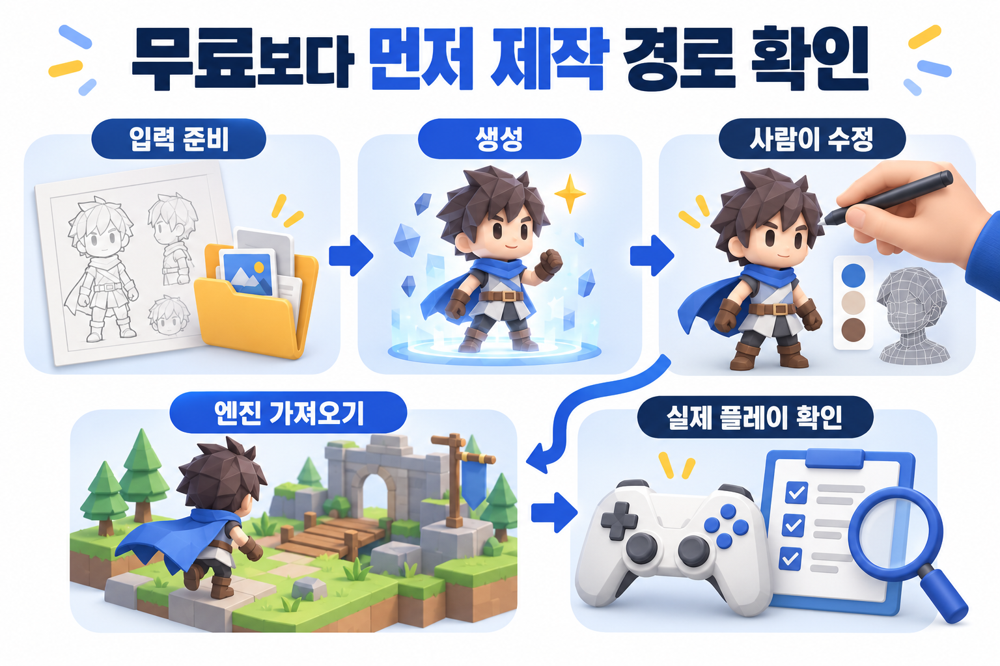
게임 자산은 생성으로 끝나지 않아요. 수정과 엔진 안의 확인까지 제작 시간에 포함해요.image_gen 생성 개념도 · 실제 제품 화면이나 성능 실측 결과가 아니에요.
1. 입력 준비목표 크기·형식과 참고 자료의 사용 권리를 정해요.
2. 생성작은 샘플부터 만들고 실패한 결과도 남겨요.
3. 사람이 수정형태·색·단서가 의도대로 유지되는지 고쳐요.
4. 엔진 가져오기파일·재질·크기와 연결 상태를 점검해요.
5. 실제 플레이 확인조작·소리·프레임 상태와 수정 시간을 확인해요.
2D 자산
크기·팔레트·프레임 일관성
3D 자산
토폴로지·UV·재질·리깅·LOD
음향
루프·길이·레벨과 실제 재생
입력 준비 → 생성 → 사람이 수정 → 엔진 가져오기 → 실제 플레이·성능 확인
보기 좋은 생성 결과와 게임에서 바로 쓸 에셋은 다를 수 있어요. 리메시는 3D 표면의 면 구성을 다시 만드는 작업이고, 리토폴로지는 모델의 면 흐름을 다시 정리하는 작업이에요. UV는 3D 표면에 그림을 입힐 위치를 펼쳐 놓은 좌표이고, LOD는 거리에 따라 다른 상세도의 모델을 쓰는 방식이에요. 2D는 크기·팔레트·프레임 일관성, 3D는 토폴로지·UV·재질·리깅·LOD, 사운드는 루프·길이·레벨을 확인해요. 도구의 홍보 성능보다 완성까지 든 시간·수정량을 비교해요.
아래 비용과 권리는 2026.10.31 공개 화면의 안내예요. 무료 웹 체험, 공개 코드, 공개 가중치, 상업 이용 허용을 따로 적었어요. 가중치는 모델이 학습한 값으로, 이를 공개했더라도 사용 허락 범위는 별도로 확인해야 해요. 원문이 확인되지 않은 항목은 미확인으로 남겨요.
확인: 공개 문서·화면. 설치·생성·내보내기·엔진 연결·성능 측정은 직접 실행하지 않았어요.
재확인 범위 2026.11.01 재검수: 월 1,000포인트·다운로드 5개·CC BY 4.0 안내를 확인했어요. Image-to-3D 월 5회라는 기존 안내는 현재 화면에서 다시 확인하지 못했어요. 생성 방식별 차감량과 실제 가능한 수량은 공식 화면에서 다시 확인해 주세요.
확인: 공개 문서·화면. 설치·생성·내보내기·엔진 연결·성능 측정은 직접 실행하지 않았어요.
2026.11.01 재확인 범위 Hi3DGen v1 README에서 hi3d-open-license-agreement-1.0과 Hunyuan3D-2mini 관련 안내를 확인했어요. 프로젝트와 포함 모델의 이용 조건을 함께 확인해야 해요. 설치·출력 품질·게임 엔진 연결은 직접 시험하지 않았어요.
재확인 범위 2026.11.01 재검수: 공식 FAQ의 무료 플랜 상업 이용 제한과 유료 플랜 권리, 가격표의 무료 스타일당 하루 3회 생성·매일 이미지 업로드 3회 안내를 확인했어요. 플랜별 조건과 한도는 이용 전 원문을 다시 확인해 주세요.
기존 엔진 연동·Agent Skill 조사도 함께 보기
게임 AI 스킬·도구 소식
새로 공개된 도구와 기존 도구의 업데이트
AI 코딩 에이전트의 스킬은 작업 절차를 담은 지침이고, MCP는 도구 연결 방식이에요. 게임 안에서 돌아가는 NPC AI나 플레이테스트 도구와 같은 종류로 묶지 않아요. 아래 도구는 설치하거나 실험하지 않았어요.
최근 신규 공개 · 2026-10-30
Aura Autopilot · 게임 플레이테스트 도구
공식 저장소는 v1.0.0-848084e 릴리스를 공개했어요. README는 Unity 6+, Unreal 5.4~5.8, Godot 4.7+와 Windows·macOS 지원을 안내하고, 탐색·테스트·검증·목표 수행 작업을 설명해요. 지원 표기는 제작자의 안내이며 이 리포트에서 호환성을 검증한 결과는 아니에요.
기획에 써 볼 질문: 정해진 목표를 달성하는 경로와 막히는 위치를 기록할 수 있을까요? 자동 실행 기록과 사람이 느낀 재미는 별도로 비교해야 해요.
조건과 한계: README에 Aura 플랜 또는 사용자 API 키 등을 쓰는 경로가 나뉘어 있어요. 실제 가격·무료 범위·학교 PC 이용 조건은 미확인이에요. 소스는 Apache-2.0이며 유료 서비스 이용 조건과 같다는 뜻은 아니에요.
공식 skills 저장소는 Unity 작업을 위한 재사용 지침을 제공하고, Claude Code·Codex 사용자에게 같은 스킬을 묶은 공식 플러그인을 안내해요. 플러그인 README는 Unity 6+와 Unity CLI를 이용하는 작업 흐름을 설명해요. 공개 릴리스 API에서는 별도 릴리스 목록을 확인하지 못해 이번 주 신규 출시로 분류하지 않았어요.
공부할 부분: UI·타일맵·에셋 설정 같은 작업의 입력, 엔진 변경, 확인할 결과를 스킬이 어떻게 나누는지 읽어 보세요. 기획 문서 검토와 게임 규칙 검수용 지침을 직접 쓰는 데 참고할 수 있어요.
앞선 Industry 글의 향후 기능 예고와 현재 저장소에 제공되는 지침을 구분해야 해요. 같은 Unity 도구라도 모든 기능이 같은 날 제공된다고 가정하지 않아요. 적용 버전·라이선스는 개별 원문을 확인하고, 원문에 없는 효과를 단정하지 않아요.
README는 AI 도구와 Unity Editor를 연결해 씬·에셋·스크립트·테스트 작업을 다루는 기능을 안내해요. 확인한 최신 공개 릴리스는 v10.3.0(2026-10-04)이고 라이선스는 MIT예요. 이번 주 새로 출시된 도구나 이번 주 트렌딩 선정작으로 표시하지 않아요.
기획 데이터가 바뀐 뒤 씬이나 테스트에 어떻게 반영되는지 확인할 연결 도구 후보예요. 모델·엔진 호환성, 비용, 실제 시간 절감은 이번 조사에서 검증하지 않았어요.
조사 범위 공식 서비스·가격 안내, 업체 블로그, GitHub README·릴리스·라이선스, Hugging Face Space·메타데이터를 확인했어요. 업체 자체 벤치마크를 독립 측정으로 쓰지 않았고, 회원 전용·유료 기능·생성 결과는 검증하지 않았어요. 이번 주 일반 AI 도구도 게임 제작 단계에 연결할 근거가 있을 때만 포함해요. 다음 호에는 공식 릴리스·요금·모델 카드·게임 엔진 연동 조건의 변경을 다시 확인해요.
GitHub 상위 트렌딩
인기 GitHub 저장소 중 게임 개발에 참고할 자료
2026.10.31에 GitHub Trending의 일간·주간 페이지를 확인했어요. 아래는 사용 언어를 제한하지 않은 주간 페이지에 표시된 순서 중 게임 제작에 간접적으로 참고할 세 가지를 고른 목록이에요. 전체 별 수로 다시 정렬한 순위가 아니에요.
주간 증가는 Trending 화면 표시, 전체 별 수와 릴리스는 GitHub API 관측값이에요. 조회 시각과 경로가 달라 값이 조금 다를 수 있어요. 현재 인기도가 품질·사용자 수·게임 성과를 증명하지는 않아요. 이전 호의 같은 조건 기록이 없어 별도의 전주 대비 증가는 계산하지 않았어요.
이 연구는 Unity 프로젝트 77개를 씬 구조·설정·실행 중 동작 검사로 평가해요. 코드가 생성됐다는 상태와 요구사항이 실제로 충족된 상태를 나눠 봐야 한다는 점을 배울 수 있어요.
데이터와 씬
ID, 값의 범위, 프리팹·컴포넌트 참조가 맞는지 확인해요.
실행과 경험
입력·충돌·종료가 맞는지, 사람이 결과를 이해하는지 확인해요.
45.7%p는 보고된 80.9%와 35.2%의 단순 차이예요. 생산성 향상률이나 성능 감소율이 아니에요.
이번 프로젝트에서 AI로 시험할 작업을 골라요
작업
AI에 주는 입력
나와야 할 결과
직접 확인할 것
기획 데이터 검증
데이터 형식, 금지 조건, 오류 예제
오류 위치와 원인을 알려주는 검사기
정상 데이터를 잘못 막는지, 오류를 놓치는지
수치 밸런스 실험
규칙·분포·고정 시드·비교할 변수
여러 실행의 분포와 실패 사례
평균만 보고 극단값을 놓치지 않는지
FSM 뼈대
상태표·전이 조건·동시 조건 우선순위
상태 코드와 재현 가능한 완료 조건
죽음·피격·공격 종료가 겹칠 때 동작
반복 작업 자동화
파일 규칙, 입력·출력 예, 예외
목록 정리·에셋 검사·문서 갱신 도구
원본 훼손, 중복 처리, 실패 로그
아트·사운드 초안
화면 안 역할·크기·스타일·이용 조건
플레이 안에 적용할 임시 에셋
가독성·일관성·권리·교체 비용
이미지·텍스트 생성도 제작 목적이 분명하면 유용해요. 얼마나 빨리 생성했는지에 그치지 않고, 게임에 넣고 고치는 데 든 시간까지 비교해요.
실행 가능한 명세 예시
유한 상태 머신(FSM)은 대기·공격 같은 상태와 바뀌는 조건을 정해요
동시에 일어난 조건
명세로 정할 동작
완료 조건
공격 도중 체력 0
공격을 중단하고 죽음으로 전환
이후 타격 이벤트에서 추가 피해가 없어요
대상이 사라짐
참조를 정리하고 대기로 전환
예외와 추적 이동이 남지 않아요
공격 범위 안·쿨다운 중
거리 유지 또는 대기 중 하나로 명시
선택한 규칙과 실제 상태가 일치해요
이 다이어그램과 완료 조건은 학습용 설계 제안이에요. Unity C# 코드 생성·실행은 이번 시안에서 수행하지 않았어요.
04 · AI 게임 출시와 화제성
AI 사용 범위와 실제 출시 상태를 나눠 봐요
2026.10.31에 공식 상점을 다시 확인했어요. 다음 두 작품은 서로 다른 사례예요. AI를 썼다는 사실만으로 최신 흥행작이라고 부르지 않아요.
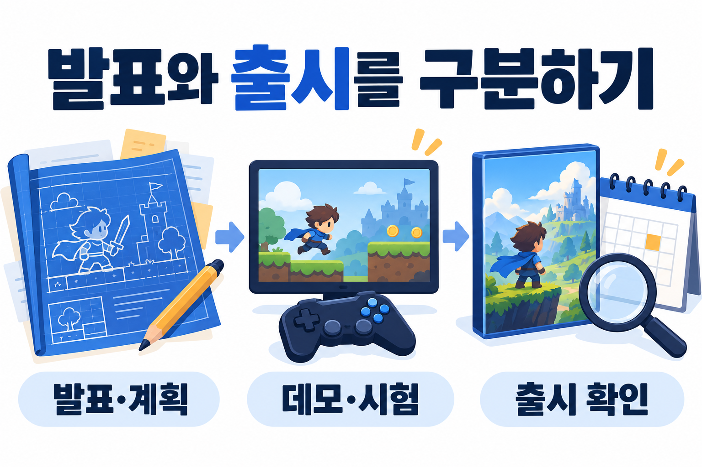
발표와 출시를 구분하기개발 계획·데모 공개·정식 출시는 서로 다른 상태예요. 실제 상태는 아래 원문으로 확인해요.발표·계획 → 데모·시험 → 출시 확인 · image_gen 생성 개념도 · 실제 제품 화면·실측 결과가 아니에요.
출시 예정 · AI 보조 개발
BORE
공식 상점은 2026년 11월 25일 출시 예정으로 안내해요. 개발자는 사람이 지시하고 검토하는 과정에서 AI 보조를 사용했다고 밝혔고, 게임 실행 중에는 콘텐츠를 AI로 생성하지 않는다고 설명해요. 어떤 코드나 에셋에 얼마나 사용했는지는 이 공시만으로 확인할 수 없어요.
현재 제품 리뷰는 없어요. 출시 예정일을 실제 출시 완료로 쓰거나, 검색 노출을 판매 성과로 해석하지 않아요.
이번 보완 조사에서는 두 작품을 최신 AI 흥행작으로 선정할 만큼의 판매·동시접속·최근 성장 근거를 확보하지 못했어요. 앞으로는 출시 상태, AI 사용 범위, 지표와 관측일, 지난 호 대비 변화를 함께 기록해요. 공시가 없다고 AI를 쓰지 않았다고 단정하지도 않아요.
05 · 최신 AI 제작 기법
AI가 만든 코드를 게임 엔진에서 실행하고 확인해요
Unity 공식 Industry 글은 Editor agent plugins를 이번 분기 안에 제공할 예정이라고 소개해요. Claude·Codex·Grok용 플러그인과 프로젝트 확인, 현재 API 사용, 결과 검증을 설명하지만, 이 예고만으로 모든 기능을 지금 정식 사용할 수 있다고 판단하지 않아요.
게임 자산의 제작 흐름입력부터 수정·엔진 확인까지의 작업 과정을 기록해요.참조 준비 → 생성·수정 → 엔진 확인 · image_gen 생성 개념도 · 실제 제품 화면·실측 결과가 아니에요.
제작 실험 제안 · 직접 재현 미실시
작은 작업 요청 → 엔진에 적용 → 실행 → 결과 확인
조건 정의입력·출력·실패 기준
AI 작업코드·씬 변경 범위 제한
엔진 실행컴파일·연결·동작 확인
결과 검수로그와 수정 전후 기록
먼저 엔진 버전과 도구 이용 조건을 확인해요. 기존 프로젝트를 복제하거나 별도 브랜치를 만들고, 아이템 데이터 검증처럼 작은 작업 하나를 맡겨요. 생성한 파일 목록과 오류 로그를 확인한 뒤, 실제 실행에서 완료 조건을 검사해요. 사용할 수 없는 플러그인은 설치된 것처럼 가정하지 말고 수동 적용과 비교해요.
기록할 항목은 요청부터 수정까지 걸린 시간, 발생한 오류, 직접 수정한 부분, 최종 동작이에요. 이번 제안은 도구의 시간 절감 효과를 측정한 실험 결과가 아니에요.
차트에서 살펴볼 게임을 고른 뒤, 플레이어가 반복하는 행동과 선택에 따른 결과를 분석해요. 다시 플레이하게 만드는 요소도 내 게임에 적용할 수 있는지 생각해 보세요.
확인한 사실 · 10월 31일 스냅샷
차트의 ‘인기’가 무엇을 뜻하는지 먼저 확인해요
Steam의 현재 최고 인기 차트는 판매 수익을 기준으로 해요. 앞선 조사에서는 ‘전체’ 항목을 선택한 화면에서 Probably Stolen은 5위, Moon Sweepers는 7위, Queen’s Domain은 15위로 확인됐어요. 지역·언어·갱신 시점에 따라 다른 화면과 순위가 달라질 수 있어요.
앞선 5·7·15위 기록만으로 언제 얼마나 상승했는지는 확인할 수 없어요. 아래 분석은 공식 소개·출시·할인·제작자 발표를 모아 검토한 것이며, 각각이 순위를 올린 원인이라고 확정하지 않아요. AI 사용 여부와 사용 범위는 게임별 공시를 따로 확인해요. 차트 순위만으로 AI 제작 여부를 판단하지 않아요.
5위로 기록했던 작품 · 앞선 순위 스냅샷
Probably Stolen - Cyberpunk Shopkeeper Sim
물건을 감정하고 거래하는 사이버펑크 가게 경영 시뮬레이션이에요. 수익을 내면서 거래 위험과 세력 관계를 관리해요.
개발: Questing Goose Studio · 배급: tinyBuild · 상점·API 확인일 2026.10.31 · 직접 플레이 미실시
공식 상점 제공 이미지예요. 스크린샷을 누르면 크게 볼 수 있어요. 제작자·권리자의 자료이며 리포트가 직접 촬영한 화면은 아니에요.
공식 상점의 Launch trailer 영상이에요. 광고 영상 전체 시청이나 실플레이 검증을 뜻하지 않아요.
작은 청소 도구로 시작해 달의 먼지를 모으고 팔며 도구와 작업 규모를 키우는 협동 청소 게임이에요. 상점은 최대 16인 협동을 안내해요. 2026.11.01 재검수에서 상점의 AI 사용 공시는 게임 내 텍스트 번역 보조를 명시했어요. 이것을 게임 전체 AI 제작으로 분류하지 않아요.
개발: DragDrop Games · 배급: DragDrop Games · 상점·API 확인일 2026.10.31 · 직접 플레이 미실시
공식 상점 제공 이미지예요. 스크린샷을 누르면 크게 볼 수 있어요. 제작자·권리자의 자료이며 리포트가 직접 촬영한 화면은 아니에요.
공식 상점의 Teaser trailer 영상이에요. 광고 영상 전체 시청이나 실플레이 검증을 뜻하지 않아요.
AI로 코드를 만들고, 그림과 음악을 준비해 스팀에 내놓는 과정이 궁금하다면 여기부터 읽어요. 출시한 게임 → 한국어 제작 영상 → 활용할 스킬 → 내 작업 순서로 연결했어요.
2026.10.31 원문 확인이번 주 한국어 영상 3개스팀 출시 사례 2개
먼저 ‘100%’가 무엇을 뜻하는지 나눠 봐요
① AI가 코드를 전부 작성했다는 주장, ② 아트·음악까지 AI를 썼다는 공시, ③ 사람이 개입하지 않고 완성했다는 주장은 서로 달라요. 이번 조사에서는 ①·②의 공개 근거를 찾았어요. 기획, 프롬프트 작성, 수정 판단, 테스트와 출시까지 사람 없이 진행했다는 사실은 독립적으로 확인하지 못했어요.
아래 사례는 개발자 공시와 제작 기록을 기준으로 구분해요. ‘100% AI’라는 문구만으로 흥행이나 완성도를 판단하지 않아요.
Agent Skill은 AI에게 특정 작업의 순서·주의점·확인 방법을 알려주는 지침 묶음이에요. 스킬을 읽는 것과 Unity 편집기를 직접 제어하는 기능은 별개예요. 아래는 Unity 공식 저장소의 현재 공개 자료이며, 원문은 영어예요. 이 리포트가 한국어로 활용 지점을 설명해요. 개별 최초 공개일은 확인하지 못했으므로 ‘이번 주 신규 출시’라고 표기하지 않아요.
Unity 공식 · 프로젝트 준비
new-unity-project
플랫폼·템플릿·패키지를 정하고 프로젝트의 기본 구성을 준비하는 지침이에요. 게임플레이 전체를 자동 완성하는 스킬은 아니에요.
작은 과제 ‘Windows용 2D 프로토타입’의 조건과 쓸 패키지를 먼저 문서로 정리해요.
공통 확인 범위: 공식 README·개별 SKILL.md 열람. 설치·Unity 실행·호환성·성능 개선은 미검증이에요. 라이선스는 저장소의 Unity Companion License를 확인해요. 에이전트·모델·Unity 이용 비용은 별도로 확인해야 하며, 무료 전체 제작을 보장하지 않아요. 조사 대상 스킬을 이번 리포트 제작 환경에 설치하거나 실행하지 않았어요.
# AI 게임 제작 작업 요청서: 판단 화면 프로토타입
목표: 단서를 읽고 반환/보류를 고르는 장면 하나를 만든다.
입력: 확인한 사건 3개와 정답표, 선택한 구현 환경과 현재 프로젝트 경로.
절차: 먼저 이해한 규칙과 모호한 점을 적고, 구현할 파일과 확인 방법을 정리한다.
규칙: 사건표를 읽어 순서대로 표시한다. 선택 결과는 정답표와 비교한다.
범위: 한 화면, 반환/보류 버튼, 결과 표시, 재시작. 계정·결제·멀티플레이는 제외한다.
출력: 수정 파일 목록, 실행 방법, 실제 검사 결과와 아직 확인하지 못한 부분.
완료 기준: 세 사건이 정답표대로 판정되고 재시작하면 첫 사건으로 돌아간다.
사람의 확인: 직접 조작해 버튼·결과·재시작을 비교하고 관찰 메모를 남긴다.
AI 사용 기록: 코드·그림·소리·글의 생성/수정 도구와 사람이 고친 부분을 구분한다.
막히면: 추측으로 완료 처리하지 말고 필요한 정보와 실패 지점을 적는다.
이 섹션의 확인 범위와 다음 주 추적 항목
확인일 2026.10.31. 공식 스팀 상점 2개, 한국어 유튜브 4개, 한국어 글·기사 3개, Unity 공식 README·스킬 목록·개별 스킬 3개를 확인했어요. 검색 결과의 AI 개요는 최종 근거로 쓰지 않았어요. 영상은 제목·설명·게시 정보 확인이며 전체 시청·실플레이·빌드 재현은 하지 않았어요.
게시 시각은 가능한 경우 원문 메타데이터를 한국 시간으로 바꿨어요. 검색 화면 날짜와 다른 경우 원문을 따랐어요. CODEX MORTIS와 Don't Go Duck은 출시 상태를 새로 확인한 기존 사례예요. 이번 주 새 출시·판매 급증으로 소개하지 않아요.
다음 호에는 출시 상태·AI 공시 변경, 새 한국어 제작 영상, 실제 재현 가능한 작업·도구 변경을 다시 확인해요. ‘100% AI’ 신규 사례가 확인되지 않으면 없다고 쓰고 기존 사례를 새 출시로 반복 소개하지 않아요.
AI 게임 기획 · 방법과 TIP
게임을 만들기 전에 플레이어에게 줄 경험을 정해요
시장 상황과 플레이어에게 줄 경험을 살펴보고, 만들 기능을 고른 뒤 플레이 테스트로 예상이 맞는지 확인해요. AI가 제안한 기능도 이 기준에 맞춰 검토해요. 예를 들어 제한된 단서를 고를 때 고민하는 재미가 생길지 예상한 뒤, 시험하는 사람이 실제로 어떻게 선택하는지 살펴봐요.
AI 기획: 기준부터 정하기먼저 목표 경험을 정하고, 규칙 대안을 플레이로 확인해요.목표 경험 → 규칙 비교 → 플레이 확인 · image_gen 생성 개념도 · 실제 제품 화면·실측 결과가 아니에요.
최근 공식 포스팅 · 2026.10.27
AI로 프로토타입을 만들 때도 목표 경험부터 정해요
Unity의 최근 기획 글은 원하는 감정과 플레이어 역할을 먼저 정하고, 이를 경험 문장과 기획 원칙으로 좁히는 방법을 소개해요. AI로 게임을 설명해 만들 때도 기능 목록보다 의도가 분명해야 한다는 관점이에요. 이 글 하나를 업계 전체의 채택률이나 성공 공식으로 일반화하지 않아요.
플레이테스트를 보고 유지·수정·폐기를 결정해요. AI의 설득력 있는 설명으로 재미 검증을 대신하지 않아요.
이번 주 기획 TIP: 예상이 틀릴 상황을 먼저 적어요
반증 조건은 내 예상이 맞지 않는다고 판단할 상황이에요. 예를 들어 ‘탐색의 호기심’을 목표로 정했다면, 선택한 길을 설명할 수 있는지와 다음 공간을 궁금해하는지를 관찰해요. ‘퀘스트를 더 넣으면 좋아질 것’이라는 제안과 실제 관찰 결과를 다른 칸에 기록해요. 아래는 편집자가 제안한 학습 과제이며 실제 실험 결과가 아니에요.
AI와 기획할 때 쓸 요청 예시
내 게임의 대상 플레이어, 목표 감정, 핵심 행동, 제작 가능한 범위는 다음과 같아. 이 조건에서 서로 다른 규칙 대안을 제안해 줘. 각 대안에 원래 기획 의도와 충돌하는 상황, 재미가 성립하지 않을 반례, 실제 플레이로 확인할 질문을 붙여 줘. 근거가 없는 시장 수치는 만들지 말고, 사실과 가설을 분리해 줘.
매주 게임 기획을 연습하는 방법
학습 단계
연습할 기획 방법
남길 결과물
경험 정의
대상·감정·역할·핵심 행동과 기획 원칙
한 장짜리 의도와 제외 범위
시스템 설계
핵심 루프·기회비용·진행·수치 가설
규칙표와 반례 목록
검증 설계
튜토리얼·선택 이유·실패·보상 이해 관찰
플레이테스트 질문과 기록
판단 기록
시장 근거와 실제 결과로 범위 재조정
수정 전후 비교와 결정 이유
매주 이 중 한 주제를 깊게 연습하고 지난 호의 결정과 달라진 이유를 남겨요. 새 방법이라고 소개하려면 공개 시점과 기존 방법에서 달라진 점을 함께 확인해요.
이번 주 60분 학습 과제 펼치기
시간은 학습 계획의 예시예요. 10분 동안 내 프로젝트나 분석할 기존 게임을 고르고, 20분 동안 목표 경험 한 문장과 기획 원칙 세 개를 써요. 다음 20분에는 AI에게 규칙 대안 두 개와 각각의 반례를 요청하고, 마지막 10분에는 직접 확인할 플레이테스트 질문을 정해요.
남길 것: 목표 경험·원칙·대안·반례·검증 질문을 담은 한 장. 프로젝트가 없다면 기존 게임을 관찰한 내용과 내가 제안한 변경을 분리해서 써요.
자기 점검: 원칙에 맞지 않아 버린 기능이 있나요? AI의 답을 사실로 받아들이지 않고 확인할 질문을 남겼나요? 실제로 시험하기 전에는 효과가 검증됐다고 쓰지 않았나요?
이번 조사에서 꺼낸 게임 아이디어 3개
이번 조사에서 떠올린 게임 아이디어 3가지
기존 작품의 브랜드·세계관·아트를 복제하는 제안이 아니에요. 규칙 사이의 관계를 작은 범위로 바꾼 기획 초안이며, 시장성과 재미는 미검증이에요. 플랫폼·엔진·도구·팀 규모·기간을 미리 제한하지 않아요. 프로토타입은 아이디어를 먼저 확인하기 위한 것이며 최종 게임의 제작 범위를 제한하지 않아요.
AI 기획: 기준부터 정하기아래 아이디어는 제작 제안이에요. 목표와 규칙부터 정하고 프로토타입으로 확인해요.목표 경험 → 규칙 비교 → 플레이 확인 · image_gen 생성 개념도 · 실제 제품 화면·실측 결과가 아니에요.
아이디어 1: 분실물 보관소
물건의 단서와 방문자의 설명을 비교하고, 조회 기회를 쓸지 판단해 반환·보류·추가 증빙 요청 중에서 골라요.단서 확인 → 조회 여부 판단 → 반환·보류·증빙 요청image_gen 생성 편집 제안 · 미제작 아이디어예요. 실제 게임 화면이나 플레이테스트 결과가 아니에요. 세부 규칙과 선택지는 아래 기획 초안을 함께 읽어 주세요.
아래는 바로 복사할 수 있는 마크다운 원문이에요. 다운로드 문서에는 코드 울타리 없이 제목과 본문이 들어 있어요.
# 아이디어 1: 분실물 보관소
> 조사에서 얻은 규칙을 변형한 기획 제안입니다. 제작·플레이테스트·수요 검증은 하지 않았습니다.
## 핵심 컨셉
보관소 직원이 물건의 단서와 찾아온 사람의 설명을 대조해 반환 여부를 결정하는 짧은 추리·관리 게임.
- 목표 경험: 근거를 찾아 판단하고, 제한된 자원 속에서 결정을 책임지는 긴장감.
- 대상 가정: 짧은 관찰·판단 퍼즐을 좋아하는 플레이어.
- 플랫폼·엔진·도구·팀 규모·기간: 미정. 이번 추천의 필수 제약으로 두지 않습니다. 목표 경험과 사용 환경에 맞춰 나중에 선택합니다.
## 조사와의 연결
Probably Stolen의 상품 확인→거래 판단→결과라는 관계에서 출발합니다. 상점·범죄·세력 설정을 복제하지 않고, 단서의 신뢰도와 반환 판단으로 바꿉니다.
원문: https://store.steampowered.com/app/4348910/
## 핵심 루프와 규칙 초안
1. 분실물 사진·기록과 방문자의 설명을 확인합니다.
2. 제한된 조회 기회를 써서 단서를 추가로 확인합니다.
3. 반환 / 보류 / 추가 증빙 요청 중 하나를 선택합니다.
4. 결과와 남은 보관 공간을 보고 다음 사건을 판단합니다.
- 조회 자원과 보관 공간은 서로 다른 기회비용을 만듭니다. 기회비용은 한 가지를 선택하면서 포기하는 다른 선택의 가치입니다.
- 사건·정답표는 AI로 초안을 만들 수 있습니다. 판정 기준을 구조화하고 모순을 검사합니다. 실시간 AI 판정을 도입한다면 일관성·비용·재현성을 별도로 시험합니다.
## 먼저 확인할 프로토타입과 확장 방향
- 포함 제안: 창구 한 화면, 사건 8개, 단서 3종, 판단 버튼 3개, 결과 기록.
- 확장 후보: AI 인물·대화·협동 조사·장기 운영을 더할 수 있습니다. 첫 시험에서는 단서와 반환 판단이 재미있는지부터 확인합니다.
- 제작 순서 제안: 핵심 규칙과 결과를 먼저 연결한 뒤, 이해하기 쉬운 화면·피드백·테스트를 보완합니다. 고정 작업 시간이나 엔진을 요구하지 않습니다.
## AI 개발·기획 활용
- 작성한 사건표의 모순·누락 검사, 선택 UI 뼈대, 상태 전이 테스트 초안에 사용.
- AI가 만든 사건과 인물 설명을 정답표·단서 관계와 대조하고, 사람이 최종 채택합니다.
## 재미 가설과 검증 계획
- 가설: 단서를 조회할지 고민하는 선택이 생기면, 단순 정답 맞히기를 넘어 자원 배분의 긴장감이 생긴다.
- 관찰: 조회 기회를 쓴 이유와 보류한 이유를 플레이어가 설명하는지 기록.
- 수정 조건: 조회를 전혀 고민하지 않으면 사건 정보와 자원 비용을 조정.
- 중단·재설계 조건: 단서가 아니라 임의 추측으로만 정답을 골라야 한다면 규칙을 다시 만듭니다.
- 산출물: 사건 CSV, 판단 흐름도, 테스트 기록, 수정 전후 비교.
## 조사한 도구로 제작한다면: 선택 가능한 예시
- 캐릭터·물건 이미지: Scenario/Leonardo/SpriteGen 등의 후보를 비교합니다.
- 사건·단서·판정 코드·테스트 초안: AI 코딩 도구에 문서화한 규칙을 전달합니다.
- 효과음: VARCO Sound 등에서 생성·편집할 수 있는지 확인합니다.
이 조합은 필수 도구가 아닙니다. 같은 입력을 받아 같은 결과물을 내는 다른 도구나 제작 방식으로 바꿀 수 있습니다. 재미·완성 가능성·AI 생성 범위는 아직 검증하지 않았습니다.
아이디어 2: 햇빛 배달부
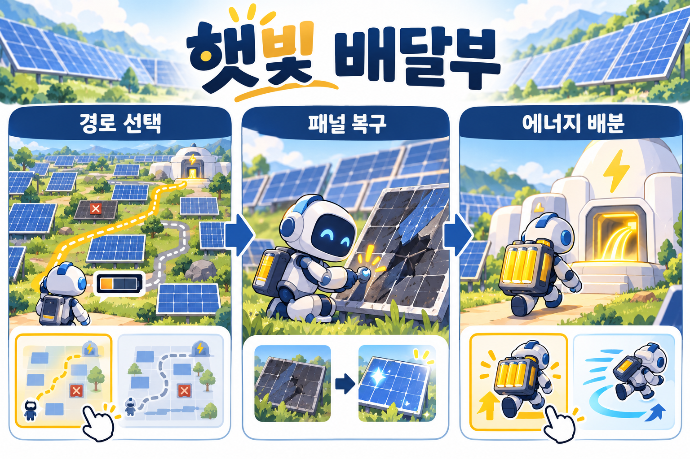
패널을 복구하면 에너지를 얻지만 이동과 수리에 배터리가 들어요. 가까운 작업을 먼저 할지, 안전하게 돌아올지 경로를 골라요.경로 선택 → 패널 복구 → 에너지 배분image_gen 생성 편집 제안 · 미제작 아이디어예요. 실제 게임 화면이나 플레이테스트 결과가 아니에요. 세부 규칙과 선택지는 아래 기획 초안을 함께 읽어 주세요.
아래는 바로 복사할 수 있는 마크다운 원문이에요. 다운로드 문서에는 코드 울타리 없이 제목과 본문이 들어 있어요.
# 아이디어 2: 햇빛 배달부
> 기획 가설과 제작 계획입니다. 시장성·재미·작업 시간의 실제 검증 결과가 아닙니다.
## 핵심 컨셉
작은 로봇이 발전 구역을 돌며 패널을 복구하고, 모은 에너지로 이동·운반 경로를 개선하는 공간 관리 퍼즐.
- 목표 경험: 한 번의 행동이 작업 흐름을 조금씩 편하게 만드는 만족감.
- 대상 가정: 눈에 보이는 진척과 동선 최적화를 좋아하는 플레이어.
- 플랫폼·엔진·도구·팀 규모·기간: 미정. 이번 추천의 필수 제약으로 두지 않습니다. 목표 경험과 사용 환경에 맞춰 나중에 선택합니다.
## 조사와의 연결
Moon Sweepers에서 행동→자원→도구 개선→더 넓은 작업으로 이어지는 관계를 참고합니다. 달 청소와 다인 협동을 복제하지 않고, 발전·전력 배분·동선 선택으로 바꿉니다.
원문: https://store.steampowered.com/app/5335510/
## 핵심 루프와 규칙 초안
1. 방전된 패널과 충전 거점을 보고 다음 작업 경로를 고릅니다.
2. 이동과 복구에 배터리를 씁니다.
3. 복구한 패널에서 에너지를 얻어 거점에 전달합니다.
4. 에너지를 운반 용량 / 이동 효율 중 어디에 쓸지 고릅니다.
5. 다시 배치된 자원과 경로에서 다음 작업을 시작합니다.
- 빠른 복구와 안전한 귀환 사이에 기회비용을 둡니다.
- 전력량·이동 비용·보상은 표로 관리하고, 한 선택이 항상 유리한지 검사합니다.
## 먼저 확인할 프로토타입과 확장 방향
- 포함 제안: 작은 격자 맵 한 개, 로봇 한 대, 거점 한 개, 업그레이드 2종.
- 확장 후보: 협동, 자동화, 3D 공간 탐색 등으로 발전시킬 수 있습니다. 첫 시험에서는 경로·배터리·보상 사이의 선택부터 확인합니다.
- 제작 순서 제안: 핵심 규칙과 결과를 먼저 연결한 뒤, 이해하기 쉬운 화면·피드백·테스트를 보완합니다. 고정 작업 시간이나 엔진을 요구하지 않습니다.
## AI 활용
- 자원표 검증, 경로 비용 계산, 배터리의 충전·소모·방전 상태와 전환 규칙을 검사하는 테스트 초안.
- 작은 맵에서 수동 계산한 기준값으로 AI 코드의 결과를 확인합니다.
## 재미 가설과 검증 계획
- 가설: 복구 뒤 다음 작업 경로가 달라지면, 같은 공간에서도 계획을 다시 세우는 재미가 생긴다.
- 관찰: 업그레이드 선택 이유, 귀환 판단, 길을 다시 고르는 장면을 기록.
- 수정 조건: 가장 가까운 패널만 반복해서 고르면 비용·거점 위치를 조정.
- 중단·재설계 조건: 진척이 선택보다 반복 클릭량에만 좌우되면 핵심 규칙을 바꿉니다.
- 산출물: 자원 흐름도, 경로 실험표, 플레이 기록, 변경 이유.
## 조사한 도구로 제작한다면: 선택 가능한 예시
- 2D 아이콘 또는 3D 로봇·소품: SpriteGen 또는 VARCO 3D/Meshy/TRELLIS.2 등에서 목표 표현에 맞는 후보를 선택합니다.
- AI 코딩 도구로 이동·자원·경로 실험 코드를 만들고 기준값과 비교합니다.
- 생성한 자산의 엔진 연결·수정 비용과 이용 조건을 확인합니다.
이 조합은 필수 도구가 아닙니다. 같은 입력을 받아 같은 결과물을 내는 다른 도구나 제작 방식으로 바꿀 수 있습니다. 재미·완성 가능성·AI 생성 범위는 아직 검증하지 않았습니다.
아이디어 3: 그림자 우편길
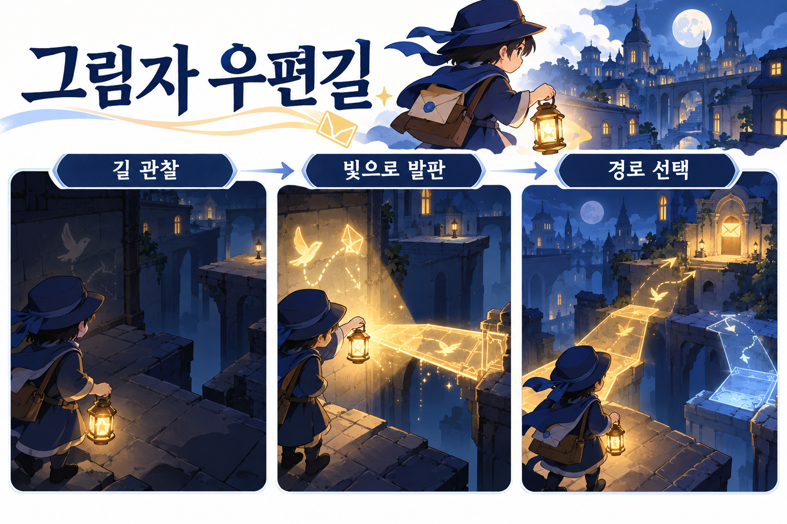
빛을 쓰면 숨은 표식과 임시 발판이 보여요. 길을 알아보는 데 쓸지, 건너갈 발판을 켜는 데 쓸지 같은 자원을 나눠 써요.길 관찰 → 빛으로 발판 → 경로 선택image_gen 생성 편집 제안 · 미제작 아이디어예요. 실제 게임 화면이나 플레이테스트 결과가 아니에요. 세부 규칙과 선택지는 아래 기획 초안을 함께 읽어 주세요.
아래는 바로 복사할 수 있는 마크다운 원문이에요. 다운로드 문서에는 코드 울타리 없이 제목과 본문이 들어 있어요.
# 아이디어 3: 그림자 우편길
> 조사를 바탕으로 제안한 탐색 게임 초안입니다. 완성된 게임이나 재미가 검증된 설계가 아닙니다.
## 핵심 컨셉
야간 배달원이 제한된 빛으로 길을 드러내고 임시 발판을 만들어, 목적지에 도달할 경로를 찾는 짧은 탐색 퍼즐.
- 목표 경험: 이미 본 공간에서 새 길을 발견하는 호기심과 납득 가능한 성취감.
- 대상 가정: 이동 규칙 하나를 익혀 공간을 다시 읽는 플레이어.
- 플랫폼·엔진·도구·팀 규모·기간: 미정. 이번 추천의 필수 제약으로 두지 않습니다. 목표 경험과 사용 환경에 맞춰 나중에 선택합니다.
## 조사와의 연결
Queen's Domain의 이동 기술과 공간 탐색의 관계를 참고합니다. 검·섬·전투·복고풍 자산을 가져오지 않고, 빛을 정보와 이동 자원으로 함께 쓰는 규칙을 제안합니다.
원문: https://store.steampowered.com/app/1799840/
## 핵심 루프와 규칙 초안
1. 목적지와 현재 보이는 길을 관찰합니다.
2. 빛을 써서 숨은 표식을 확인하거나 임시 발판을 켭니다.
3. 제한된 자원 안에서 어느 길로 갈지 선택합니다.
4. 도착하거나 실패한 뒤, 새로 알게 된 연결을 바탕으로 다시 시도합니다.
- 같은 빛을 정보 확인과 이동에 함께 쓰므로 탐색 순서를 고민하게 합니다.
- 초반에는 빛을 회복할 안전 지점을 두고, 막힌 이유를 화면에서 설명합니다.
## 먼저 확인할 프로토타입과 확장 방향
- 포함 제안: 방 3개, 빛 토글, 발판 상태 2종, 목적지와 재시작.
- 확장 후보: 전투, 절차적 공간, 대화형 NPC, 실시간 빛 표현을 검토할 수 있습니다. 첫 시험은 빛으로 정보와 이동을 함께 선택하는 규칙에 집중합니다.
- 제작 순서 제안: 핵심 규칙과 결과를 먼저 연결한 뒤, 이해하기 쉬운 화면·피드백·테스트를 보완합니다. 고정 작업 시간이나 엔진을 요구하지 않습니다.
## AI 활용
- 방 상태표와 연결 관계의 누락 검사, 재시작·자원 소진 테스트, 튜토리얼 문장 대안 생성.
- 방의 정답 경로와 되돌아갈 수 없는 상태는 사람이 직접 확인합니다.
## 재미 가설과 검증 계획
- 가설: 같은 자원을 확인과 이동에 써야 하면, 발견이 다음 선택의 전략을 바꾼다.
- 관찰: 실패 원인 설명, 재시도 경로 변화, 새 경로를 발견한 장면을 기록.
- 수정 조건: 이해하지 못한 상태로 빛을 소모하면 정보 표시·초기 비용부터 조정.
- 중단·재설계 조건: 정답을 알아도 입력 실수 때문에만 반복 실패한다면 자원 규칙과 조작을 분리합니다.
- 산출물: 방 연결도, 상태표, 검증 질문, 수정 전후 맵.
## 조사한 도구로 제작한다면: 선택 가능한 예시
- 배경·캐릭터 시안: Scenario/Leonardo/Firefly 등의 후보를 비교합니다.
- 분위기 영상: Runway/Luma 등은 콘티·비조작 배경 후보이며 실제 이동 맵 구현과 구분합니다.
- AI로 방 상태·도달 경로·재시작 테스트를 만들고 실행 결과를 확인합니다.
이 조합은 필수 도구가 아닙니다. 같은 입력을 받아 같은 결과물을 내는 다른 도구나 제작 방식으로 바꿀 수 있습니다. 재미·완성 가능성·AI 생성 범위는 아직 검증하지 않았습니다.
추가 제안 · AI 중심 제작 아이디어 3개와 워크플로우
코드와 에셋 제작을 AI에 맡기면 어떤 게임을 만들어 볼까요?
기본 아이디어 3개와 별도로, 이번에 조사한 제작 도구를 연결해 볼 기획 3개를 제안해요. 플랫폼·엔진·팀 규모·작업 시간을 미리 제한하지 않아요. 도구 조합은 대체 가능한 예시예요.
여기서 ‘100% AI 제작 목표’는 코드·글·이미지·소리 등 제작 산출물의 생성을 AI에 맡겨 보겠다는 뜻이에요. 기획 선택·권리 확인·결과 검수까지 사람 없이 끝냈다는 뜻이나 실제 제작 성공 주장은 아니에요.
게임 자산의 제작 흐름AI 생성물도 사람이 수정하고 엔진에서 확인하는 과정이 필요해요.참조 준비 → 생성·수정 → 엔진 확인 · image_gen 생성 개념도 · 실제 제품 화면·실측 결과가 아니에요.
AI에 줄 자료와 받을 결과, 완료 기준을 정해요
1 → 기획·검사 기준목표 경험·규칙·데이터·검사 사례를 AI와 문서로 만들어요. 결과를 보고 판단할 기준을 먼저 정해요.
2 → AI 생성·통합코드·그림·3D·영상·소리를 필요에 맞게 생성하고 같은 프로젝트에 연결해요. 도구는 같은 입출력의 다른 후보로 바꿔도 돼요.
3 → 실행·수정·배포자동 검사와 직접 플레이로 예상·결과를 대조해요. 자산·코드·비용·권리·빌드 상태를 기록하고 다음 범위를 정해요.
‘모델이 코드 작성에 성공했다’와 ‘게임이 재미있고 배포 가능하다’는 별도 확인 항목이에요. 아래 계획은 실행하지 않은 제안이며, 제작 속도나 완성을 보장하지 않아요.
AI 제작 제안 1: 기억의 진열장
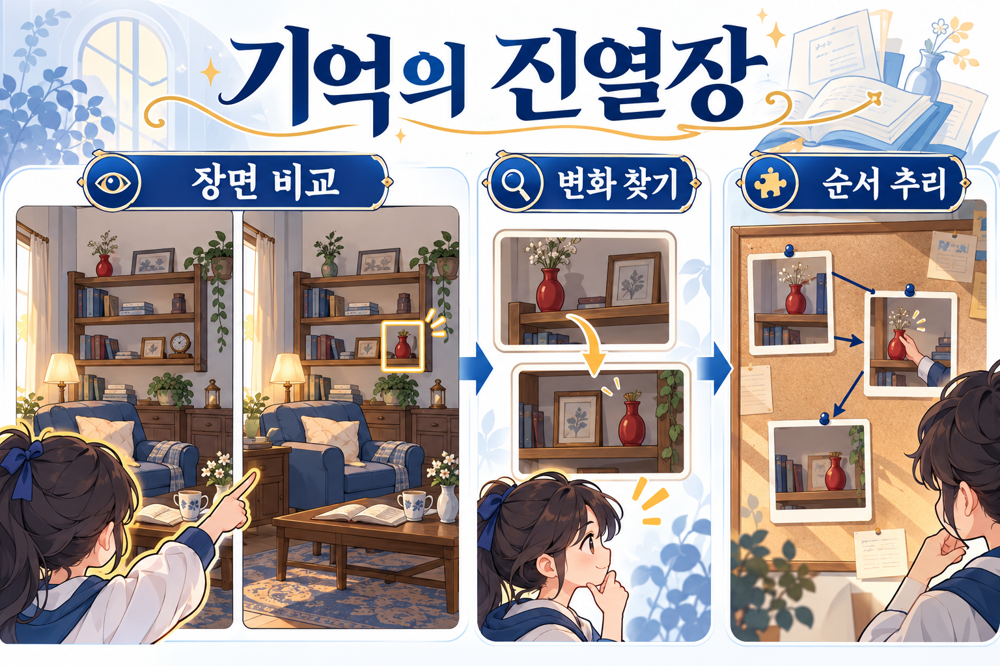
같은 공간을 두 장면으로 비교해 바뀐 물건을 찾고, 단서를 이어 사건의 순서를 추리해요. 의도하지 않은 그림 변화는 정답 단서와 구분해야 해요.장면 비교 → 변화 찾기 → 순서 추리image_gen 생성 편집 제안 · 미제작 아이디어예요. 실제 게임 화면이나 플레이테스트 결과가 아니에요. 세부 규칙과 선택지는 아래 기획 초안을 함께 읽어 주세요.
같은 공간의 서로 다른 기억에서 바뀐 물건을 찾아 사건의 순서를 재구성하는 관찰·추리 게임.
반복 구조 장면 관찰 → 변화 지점 선택 → 단서 연결 → 기억 순서 확정 → 새 관점의 장면 확인
조사와의 연결 분실물 보관소의 단서 판단, Scenario·Leonardo의 참조 이미지, 이미지 편집·변형 도구 조사.
첫 확인 과제 장면 한 쌍과 변화 한 가지로 관찰·판정·재시작을 연결한다. 생성 과정에서 의도하지 않은 변화가 정답 단서처럼 보이지 않아야 한다.
# AI 제작 아이디어 1: 기억의 진열장
> AI가 코드·글·그림·소리 등 산출물 제작을 맡는 것을 목표로 한 기획·워크플로우 제안입니다. 실제 제작·재미·완전 자동화·출시 가능성을 검증한 결과는 아닙니다.
## 컨셉과 조사 연결
같은 공간의 서로 다른 기억에서 바뀐 물건을 찾아 사건의 순서를 재구성하는 관찰·추리 게임.
- 조사 연결: 분실물 보관소의 단서 판단, Scenario·Leonardo의 참조 이미지, 이미지 편집·변형 도구 조사.
- 플랫폼·엔진·팀 규모·기간: 미정. 특정 도구를 필수 조건으로 두지 않습니다.
- 핵심 루프: 장면 관찰 → 변화 지점 선택 → 단서 연결 → 기억 순서 확정 → 새 관점의 장면 확인
## AI 중심 제작 워크플로우
1. 기획 AI: 장면별 원본·바뀐 물건·정답·오답 이유를 JSON으로 생성하고 모순을 점검한다.
2. 이미지 AI 후보: Scenario/Leonardo/Firefly 등으로 기준 장면과 변화 장면을 만든다. 선택 도구에서 부분 편집·참조 유지가 가능한지 확인한다.
3. 코딩 AI: 장면 전환, 클릭/터치/입력 판정, 단서 보드, 결과와 재시작을 생성한다. 엔진·플랫폼은 확정하지 않는다.
4. 소리·글 AI: 장면의 효과음과 인물 메모 초안을 만들고 길이·정답 정보 노출을 검사한다.
5. 테스트 AI: 정답표·화면 변화·진행 경로를 비교하는 검사와 테스트 초안을 만든다. 사람은 변화가 읽히고 추론이 납득되는지 확인한다.
## 첫 시험과 완료 기준
- 먼저 만들 것: 장면 한 쌍과 변화 한 가지로 관찰·판정·재시작을 연결한다. 생성 과정에서 의도하지 않은 변화가 정답 단서처럼 보이지 않아야 한다.
- 완료 기준: 의도한 변화가 실제로 보이고, 다른 부분의 변화가 추리를 방해하지 않으며, 정답표와 판정이 일치한다.
- 실패/수정 기준: 같은 장면을 편집해도 얼굴·가구·배치가 의도하지 않게 바뀔 수 있다. 생성물이 기준과 다르면 재생성·부분 수정하거나 규칙을 조정한다.
## 사람이 정하고 확인할 일
목표 경험·규칙·권리·최종 채택을 판단하고 실제 플레이를 확인합니다. AI가 만든 테스트의 통과만으로 재미나 상업 출시 적합성을 확정하지 않습니다.
## 남길 산출물
PRD·규칙표·프롬프트/설정·생성/수정 이력·코드·자산 목록·실행 가능한 결과물·테스트 기록·비용/대기/수정 시간·출처와 라이선스.
## 도구 선택과 대체
위 도구는 후보입니다. 같은 입출력을 제공하는 다른 AI·라이브러리·엔진으로 대체할 수 있습니다. 비용·GPU·플랜·지역·출력물 조건은 실제 선택 단계에서 확인합니다.
## 이번 호 원문·비교 자료
- 도구 비교: https://game-trend-report.vercel.app/reports/weekly-2026-10-31.html#tool-choice
- SpriteGen: https://spritegen.io/
- VARCO 3D: https://3d.varco.ai/
- Scenario: https://www.scenario.com/
- ComfyUI: https://github.com/Comfy-Org/ComfyUI
AI 제작 제안 2: 구름 정거장
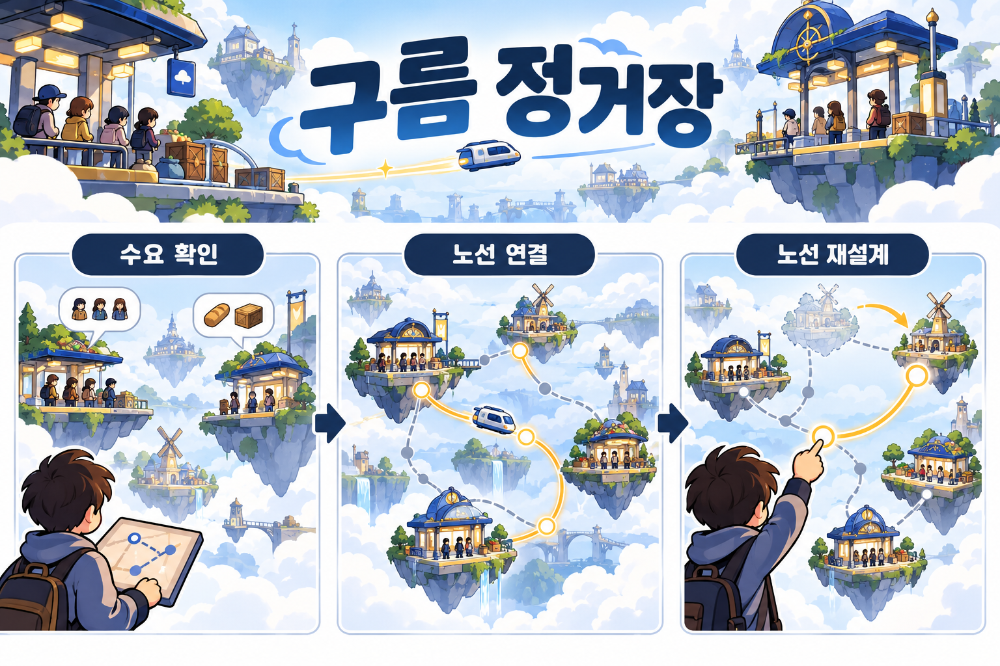
승객과 자원이 필요한 곳을 확인한 뒤 정거장을 노선으로 연결해요. 정거장이나 길이 달라지면 운송 경로를 다시 설계해요.수요 확인 → 노선 연결 → 노선 재설계image_gen 생성 편집 제안 · 미제작 아이디어예요. 실제 게임 화면이나 플레이테스트 결과가 아니에요. 세부 규칙과 선택지는 아래 기획 초안을 함께 읽어 주세요.
공중의 작은 정거장들을 연결해 승객과 자원을 운송하고, 길이 바뀔 때 노선을 다시 설계하는 경로 퍼즐.
반복 구조 수요 확인 → 노선 연결 → 운송 → 자원 획득 → 정거장·경로 변화 → 노선 재설계
조사와의 연결 햇빛 배달부의 동선·자원 선택, VARCO 3D·Meshy·TRELLIS.2의 소품 제작, ComfyUI 반복 제작 조사.
첫 확인 과제 정거장 몇 곳과 한 운송체로 경로 선택이 실제 자원·대기시간을 바꾸는지 시험한다. 정거장 수와 표현 방식은 검증에 맞춰 조정한다.
# AI 제작 아이디어 2: 구름 정거장
> AI가 코드·글·그림·소리 등 산출물 제작을 맡는 것을 목표로 한 기획·워크플로우 제안입니다. 실제 제작·재미·완전 자동화·출시 가능성을 검증한 결과는 아닙니다.
## 컨셉과 조사 연결
공중의 작은 정거장들을 연결해 승객과 자원을 운송하고, 길이 바뀔 때 노선을 다시 설계하는 경로 퍼즐.
- 조사 연결: 햇빛 배달부의 동선·자원 선택, VARCO 3D·Meshy·TRELLIS.2의 소품 제작, ComfyUI 반복 제작 조사.
- 플랫폼·엔진·팀 규모·기간: 미정. 특정 도구를 필수 조건으로 두지 않습니다.
- 핵심 루프: 수요 확인 → 노선 연결 → 운송 → 자원 획득 → 정거장·경로 변화 → 노선 재설계
## AI 중심 제작 워크플로우
1. 기획 AI: 정거장·연결·수요·보상을 표로 만들고, 최소 도달 경로와 막힌 상태를 검사한다.
2. 자산 AI 후보: VARCO 3D/Meshy/TRELLIS.2 등으로 정거장·운송체를 생성하거나 2D 그림·아이콘으로 표현한다. 목표 화면에 맞게 도구를 바꿀 수 있다.
3. 코딩 AI: 노선 편집·이동·수요 처리·자원 계산·상태 저장을 생성한다. 선택한 엔진에서 실제 실행한다.
4. 반복 제작 AI 후보: ComfyUI/Scenario 워크플로우 등으로 색·소품 변형을 관리한다. 노드·API·모델별 조건을 확인한다.
5. 테스트 AI: 수요 처리·노선 연결·자원 음수·재시작 사례를 검사한다. 사람은 노선을 바꿀 이유가 생기는지 관찰한다.
## 첫 시험과 완료 기준
- 먼저 만들 것: 정거장 몇 곳과 한 운송체로 경로 선택이 실제 자원·대기시간을 바꾸는지 시험한다. 정거장 수와 표현 방식은 검증에 맞춰 조정한다.
- 완료 기준: 노선 변화가 운송 결과에 반영되고, 도달 불가·자원 소진 상태를 설명하며, 다시 시작할 수 있다.
- 실패/수정 기준: 화려한 3D 생성보다 경로 선택이 중요하다. 자산 최적화·충돌·단위가 맞지 않거나 선택이 한 가지로 고정되면 표현과 규칙을 다시 정한다.
## 사람이 정하고 확인할 일
목표 경험·규칙·권리·최종 채택을 판단하고 실제 플레이를 확인합니다. AI가 만든 테스트의 통과만으로 재미나 상업 출시 적합성을 확정하지 않습니다.
## 남길 산출물
PRD·규칙표·프롬프트/설정·생성/수정 이력·코드·자산 목록·실행 가능한 결과물·테스트 기록·비용/대기/수정 시간·출처와 라이선스.
## 도구 선택과 대체
위 도구는 후보입니다. 같은 입출력을 제공하는 다른 AI·라이브러리·엔진으로 대체할 수 있습니다. 비용·GPU·플랜·지역·출력물 조건은 실제 선택 단계에서 확인합니다.
## 이번 호 원문·비교 자료
- 도구 비교: https://game-trend-report.vercel.app/reports/weekly-2026-10-31.html#tool-choice
- SpriteGen: https://spritegen.io/
- VARCO 3D: https://3d.varco.ai/
- Scenario: https://www.scenario.com/
- ComfyUI: https://github.com/Comfy-Org/ComfyUI
AI 제작 제안 3: 소리로 고치는 수리점
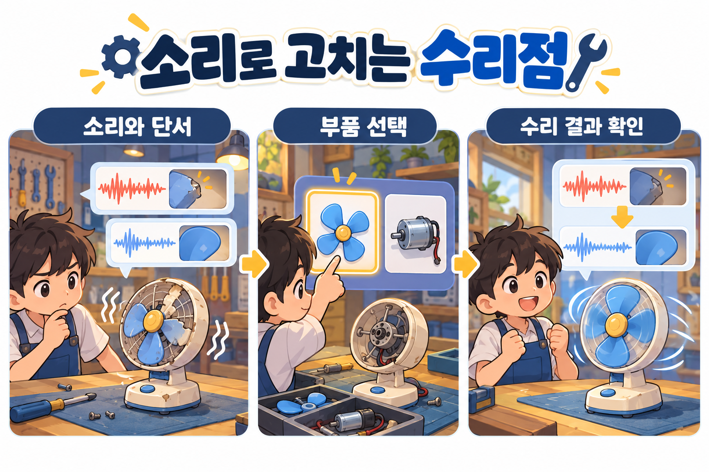
고장 난 물건의 소리와 보이는 단서를 비교해 부품을 골라요. 고친 뒤 정상 소리와 결과를 다시 확인하며, 소리를 듣기 어려운 사람도 단서로 판단할 수 있게 해요.소리와 단서 → 부품 선택 → 수리 결과 확인image_gen 생성 편집 제안 · 미제작 아이디어예요. 실제 게임 화면이나 플레이테스트 결과가 아니에요. 세부 규칙과 선택지는 아래 기획 초안을 함께 읽어 주세요.
고장 난 물건에서 나는 소리와 단서를 비교해 원인을 찾고, 알맞은 부품을 골라 물건을 고치는 청각·관찰 퍼즐.
반복 구조 고장 난 소리·시각 단서 확인 → 원인 추리 → 부품 선택 → 수리 결과의 소리 비교 → 다음 의뢰
조사와의 연결 단서→판단→결과 게임 분석, VARCO Sound의 효과음·변형, 캐릭터·소품 이미지 도구 조사.
첫 확인 과제 물건 하나에서 정상일 때와 고장 났을 때 나는 소리를 두 가지 수리 선택과 연결한다. 자막·시각 단서를 함께 제공해 소리만으로 접근이 제한되지 않도록 시험한다.
# AI 제작 아이디어 3: 소리로 고치는 수리점
> AI가 코드·글·그림·소리 등 산출물 제작을 맡는 것을 목표로 한 기획·워크플로우 제안입니다. 실제 제작·재미·완전 자동화·출시 가능성을 검증한 결과는 아닙니다.
## 컨셉과 조사 연결
고장 난 물건에서 나는 소리와 단서를 비교해 원인을 찾고, 알맞은 부품을 골라 물건을 고치는 청각·관찰 퍼즐.
- 조사 연결: 단서→판단→결과 게임 분석, VARCO Sound의 효과음·변형, 캐릭터·소품 이미지 도구 조사.
- 플랫폼·엔진·팀 규모·기간: 미정. 특정 도구를 필수 조건으로 두지 않습니다.
- 핵심 루프: 고장 난 소리·시각 단서 확인 → 원인 추리 → 부품 선택 → 수리 결과의 소리 비교 → 다음 의뢰
## AI 중심 제작 워크플로우
1. 기획 AI: 고장 원인·단서·부품·정답표·피드백을 생성하고 인과관계를 검토한다.
2. 음향 AI 후보: VARCO Sound 등으로 정상일 때와 고장 났을 때의 소리를 각각 변형해 만든 뒤 길이·음량·루프 접점을 맞춘다. 현재 한도·상업 조건을 확인한다.
3. 이미지 AI 후보: SpriteGen/Scenario/Leonardo 등으로 물건·캐릭터·작업대 이미지를 만든다. 일관성과 작은 화면의 식별성을 점검한다.
4. 코딩 AI: 비교 재생·단서 보기·부품 선택·판정·재시작·접근성 설정을 생성한다.
5. 테스트 AI: 정답표와 판정·동시 재생·볼륨·저장 상태를 검사한다. 사람은 소리 차이와 단서가 함께 납득되는지 확인한다.
## 첫 시험과 완료 기준
- 먼저 만들 것: 물건 하나에서 정상일 때와 고장 났을 때 나는 소리를 두 가지 수리 선택과 연결한다. 자막·시각 단서를 함께 제공해 소리만으로 접근이 제한되지 않도록 시험한다.
- 완료 기준: 정상일 때와 고장 났을 때의 소리, 시각 단서가 원인 차이를 설명하고, 선택·판정·피드백·재시작이 일치한다.
- 실패/수정 기준: 생성 소리의 차이가 고장 원인보다 임의 잡음에 의존할 수 있다. 식별이 안 되면 음향·시각 단서를 고치고, 정답 관계를 다시 설계한다.
## 사람이 정하고 확인할 일
목표 경험·규칙·권리·최종 채택을 판단하고 실제 플레이를 확인합니다. AI가 만든 테스트의 통과만으로 재미나 상업 출시 적합성을 확정하지 않습니다.
## 남길 산출물
PRD·규칙표·프롬프트/설정·생성/수정 이력·코드·자산 목록·실행 가능한 결과물·테스트 기록·비용/대기/수정 시간·출처와 라이선스.
## 도구 선택과 대체
위 도구는 후보입니다. 같은 입출력을 제공하는 다른 AI·라이브러리·엔진으로 대체할 수 있습니다. 비용·GPU·플랜·지역·출력물 조건은 실제 선택 단계에서 확인합니다.
## 이번 호 원문·비교 자료
- 도구 비교: https://game-trend-report.vercel.app/reports/weekly-2026-10-31.html#tool-choice
- SpriteGen: https://spritegen.io/
- VARCO 3D: https://3d.varco.ai/
- Scenario: https://www.scenario.com/
- ComfyUI: https://github.com/Comfy-Org/ComfyUI
어떤 섹션인가요? 앞에서 분석한 내용을 바탕으로 ‘내 게임에서 무엇부터 만들어 확인할지’를 정하는 곳이에요. 프로토타입은 핵심 규칙을 확인하기 위해 간단하게 만든 게임이고, 검증은 내 예상이 맞는지 실제 행동으로 확인하는 일이에요.
무엇을 얻나요? 시험할 질문, 최소한으로 구현할 항목, 사람에게 보여 줄 방법, 결과를 보고 고칠 기준을 얻어요. 아래는 아직 만들거나 테스트하지 않은 제작 제안이에요. 작업 범위와 시간은 팀의 상황에 맞춰 줄여요.
프로토타입에서 확인할 질문
단서를 더 볼 기회가 제한되면 언제 조회할지 고민할까요? 아래 분실물 보관소는 이를 확인하기 위한 편집 제안이에요. 사건 3개와 조회 2회는 학습용 설정이며 아직 제작하거나 검증하지 않았어요.
예를 들어 방문자의 설명과 물건의 단서를 읽고, 물건을 돌려주는 반환이나 판단을 미루는 보류를 선택해요. 단서를 더 보면 남은 조회 기회가 줄어요. 참가자가 조회한 시점과 선택한 이유를 기록하고, 정보가 부족해 찍었다면 단서부터 고쳐요.
이 구상은 분실물 보관소 기획 초안과 게임의 반복 행동·선택·결과 분석을 연결한 학습 예시예요. 사람은 사건의 정답을 정하고, 참여자의 실제 행동과 관찰 결과를 확인해요. AI는 사건표의 모순이나 코드·검사 초안을 돕는 선택지예요.
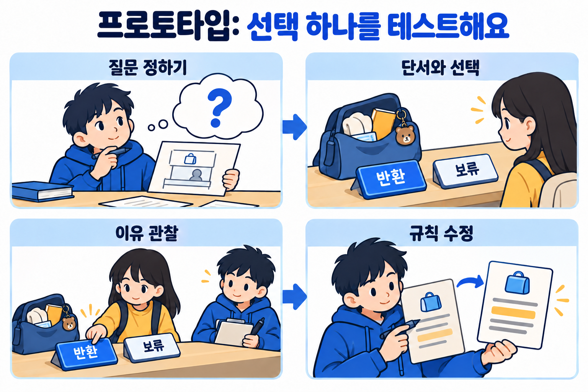
프로토타입은 질문 하나를 확인하는 도구예요분실물의 주인을 판단하는 장면에서 언제 추가 단서를 보고 왜 반환·보류했는지 관찰해요.image_gen 학습용 개념도 · 실제 제품 화면·실제 참가자 테스트 결과가 아니에요.
이번 호 아이디어에 적용한 예시
‘분실물 보관소’에서 조회 기회가 판단을 바꾸는지 시험해요
위에서 추천한 기획 초안 전체를 한 번에 만드는 대신, 물건을 돌려줄지 판단하는 장면만 만들어 봐요. 확인할 질문은 ‘정보를 더 볼 기회가 제한되면 플레이어가 언제 조회할지 고민하고, 그 이유를 설명할 수 있을까?’예요.
물건 설명과 방문자의 주장이 적힌 사건 세 개를 준비해요.
‘추가 단서 조회’ 버튼을 누르면 사람이 미리 작성한 단서가 보여요.
세 사건에서 조회는 두 번만 가능하도록 해요.
플레이어는 반환 또는 보류를 고르고, 결과와 남은 조회 횟수를 확인해요.
사건 수와 조회 횟수는 학습용 예시예요. 균형이 검증된 수치나 업계 표준은 아니에요. 정답과 결과는 작성한 데이터로 정하고, AI가 방문자의 진위를 즉석에서 판정하게 만들 필요는 없어요.
질문 정하기어떤 선택이 생길까요?
작게 만들기설명·버튼·결과만 연결
보여주기실제 행동과 이유 기록
고치기가장 큰 문제부터 수정
처음에는 종이로 해도 괜찮아요
종이에 물건·주장·숨은 단서를 적고, 조회할 때만 단서를 보여줘도 같은 질문을 시험할 수 있어요. 디지털로 만들 때도 사각형 버튼과 글자, 남은 횟수 표시부터 시작해요. 인물 그림이나 여러 스테이지보다 이 선택이 이해되는지 먼저 확인해요.
단계
할 일
남길 결과물
정하기
질문과 사건 데이터, 정답·예외를 적어요.
한 장짜리 규칙표
만들기
조회·반환·보류와 결과를 연결해요.
종이 프로토타입 또는 실행 가능한 작은 빌드
보여주기
언제 조회했는지, 왜 그렇게 판단했는지 관찰해요.
참여 인원·설명 조건·행동·발언 기록
고치기
이해하지 못한 점과 규칙 자체의 문제를 구분해 하나를 수정해요.
수정 전후 비교와 변경 이유
AI의 역할: 사건표의 모순 검사, 버튼·상태 전이 코드 초안, 조회 횟수와 결과 계산 테스트를 도울 수 있어요. 기획 의도와 사건의 정답, 실제 플레이어 반응은 사람이 확인해요.
플레이 테스트 결과를 해석하는 방법
조회할 때마다 선택 이유를 설명한다면 판단 과정이 드러난 것이에요. 그래도 재미가 충분하다는 결론은 아니에요. 정보가 부족해 찍었다면 단서 구성을, 버튼이나 설명을 이해하지 못했다면 화면과 안내를 먼저 고쳐요.
첫 프로토타입에서 만들지 않을 것
계정·결제·온라인 기능, 긴 스토리, 수십 개 사건, 자유 대화형 NPC는 이번 질문을 확인하는 데 필요하지 않아요. 원하면 이틀 안의 작은 작업으로 계획하되, 팀의 실력과 시간에 맞춰 사건 수부터 줄여요.
두 섹션의 차이를 기억해요
기존 게임 분석은 남의 게임에서 행동·선택·결과를 읽는 공부예요. 프로토타입 계획은 그 배움을 내 규칙으로 바꾸어 확인할 일을 정하는 단계예요. 분석 그림과 시험 계획은 실제 플레이 결과와 따로 기록해요.
실제로 해 본 단계만 체크해요
0 / 6개 완료
체크 상태는 이 브라우저에만 저장돼요. 외부 서버로 전송하지 않아요.
06 · 데이터 검사와 확률 실습
게임 데이터 검사와 확률 시뮬레이션 실습
아래 두 사례는 목적이 달라요. 첫 번째는 실제 실행한 검사 예제이고, 두 번째는 확률을 이해하기 위한 가상 모형이에요. 검사기는 잘못된 데이터를 찾고, 가상 모형은 정한 규칙을 여러 번 실행해 결과가 어떻게 달라지는지 보여줘요.
이 실습에서 무엇을 배우나요?
데이터 검사와 확률 실험은 서로 다른 질문에 답해요. 첫 번째는 사람이 미리 정한 데이터 규칙을 검사기가 제대로 적용하는지 보여 줘요. 두 번째는 같은 확률이라도 한 판마다 결과가 얼마나 달라질 수 있는지 살펴보는 가상 실험이에요.
아래에서 검사 결과와 코드를 확인한 뒤, 확률과 기회 수를 움직여 발동 횟수의 분포가 어떻게 바뀌는지 비교해 보세요.
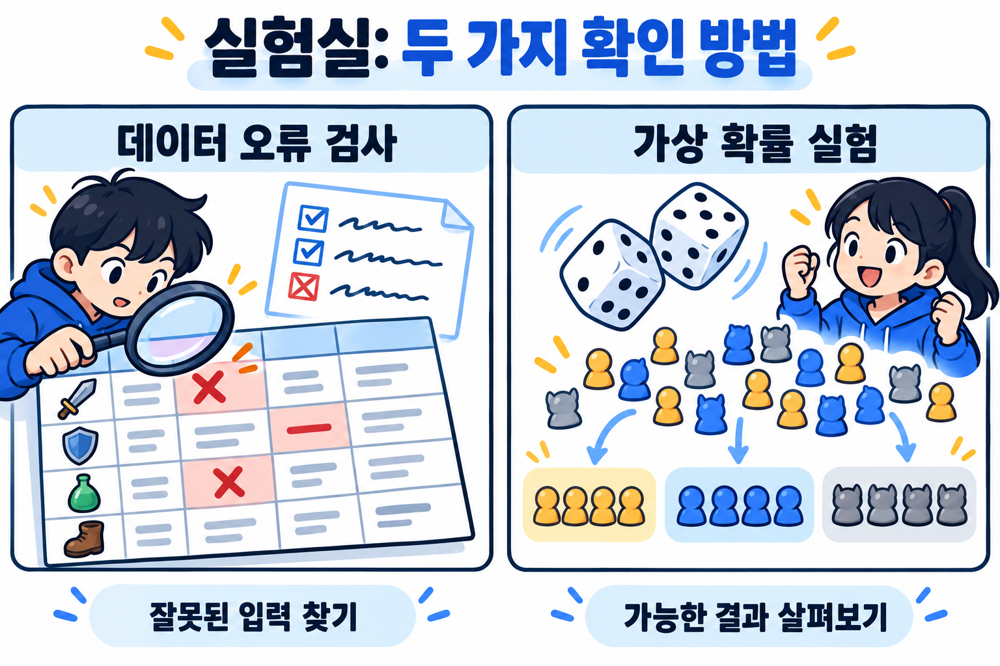
검사와 가상 실험은 확인하는 대상이 달라요왼쪽은 미리 정한 데이터 규칙에 맞는지 확인하고, 오른쪽은 같은 조건을 반복했을 때 결과가 어떻게 달라지는지 계산해요.image_gen 개념도 · 실제 제품 화면이나 오류 수·확률 실측 결과를 그린 자료가 아니에요.
직접 실행한 예제
기획 데이터에 넣은 오류 6개를 찾아냈어요
6 / 6의도적으로 넣은 오류
정상 예제 데이터 2행은 오류 0개, 손상 예제 데이터 3행은 오류 6개를 확인했어요. 실제 게임 데이터가 아닌 인공 예제 데이터이며, 이 결과를 일반적인 오류 검출 정확도로 해석하면 안 돼요.
검사기는 무엇을 확인했나요?
사람이 작성한 규칙에 따라 입력한 데이터의 ID가 비거나 겹치지 않는지, 비용이 0 이상의 정수인지 확인해요. ID는 항목을 구별하는 이름표예요. 쿨다운은 기술을 다시 쓰기까지 기다리는 시간으로, 음수는 오류예요. 다음 상태는 정해 둔 Idle·Attack·Recover 중 하나여야 하므로 목록에 없는 상태도 오류로 표시해요.
정상 예제와 일부러 잘못 만든 예제를 넣고 오류 목록을 비교한 결과예요. AI 모델의 성능 시험이 아니라 규칙 기반 데이터 검사예요. 아래 JSON과 검사 예제에서 실제 기록과 규칙을 확인할 수 있어요.
막대는 원본 실행 기록의 오류 수를 보여 줘요. 긴 막대는 2개, 짧은 막대는 1개이며 합계는 6개예요. 검출 정확도나 다른 도구보다 우수하다는 점수를 뜻하지 않아요.
검사
오류 수
중복·빈 ID
2
음수·소수 비용
2
음수 쿨다운
1
없는 상태 참조
1
원본 실행 기록의 환경은 Node.js v24.16.0이에요. Unity 프로젝트 연결, 수작업 대비 시간 절감, 모델 간 비교는 하지 않았어요. 실행 시 외부 API는 호출하지 않았어요.
기존 과정에서 반복되는 오류부터 고르면 도구를 유지하는 비용과 얻는 이득을 비교하기 쉬워요.
가상 시뮬레이션 · 실제 게임 통계가 아니에요
발동 확률이 같아도 판마다 실제 발동 횟수는 달라질 수 있어요
효과가 독립적으로 발동하는 단순 모형이에요. 확률과 기회 수를 바꾸면 1,000번의 가상 실행 결과를 다시 계산해요. 고정 시드를 사용해 같은 조건에서는 같은 결과를 보여줘요.
숫자를 바꾸기 전에 살펴봐요
기본 설정은 한 번의 기회마다 발동 확률 30%, 한 판에 10회 기회예요. 매번 앞선 결과와 독립적으로 판정하고, 그 한 판을 1,000번 가상 실행해요. 예를 들어 발동 확률을 올리거나 기회 수를 줄인 뒤, 평균뿐 아니라 한 번도 발동하지 않은 판과 3회 이상 발동한 판의 비율도 비교해 보세요.
기본 설정의 이론상 평균은 한 판에 3회(10 × 30%)지만, 모든 판이 3회 발동한다는 뜻은 아니에요. 고정 시드로 만든 1,000판의 결과는 가상 분포이며 실제 매출·이용자 행동·게임의 재미를 입증하지 않아요.
평균 발동 횟수계산 중
한 번도 발동하지 않음계산 중
3회 이상 발동계산 중
0~2회 발동3회 이상 발동
가상 결과 수치표 보기
발동 횟수
가상 실행 수
비율
내 게임에 적용할 질문이에요
평균 발동 횟수가 비슷해도 중요한 순간에 한 번도 발동하지 않는 판이 생길 수 있어요. 보장 장치·최대 연속 실패 수·기회 수를 별도 변수로 실험할 수 있어요. 이 모형에는 상호 의존, 플레이어 선택, 난이도 변화, 보장 장치가 없어요. 실제 체감 밸런스를 대신하지 않아요.
취업과 참고 자료
현재 자료는 채용 사례이며 전체 시장 통계가 아니에요
이 호의 기존 공고에 2026.11.01 확인한 취업·진로 정보를 보완했어요. 공고 몇 건으로 업계 전체의 채용 증감을 판단하지 않아요. 모집 상태는 확인일 기준이며, 지원 직전에 원문을 다시 확인하세요. ‘경력무관’이나 ‘학력무관’만으로 고교 재학생도 지원할 수 있다고 해석하지 않아요.
07 · 취업·교육·입시
게임 분야 취업과 진학, 내게 맞는 기회를 찾아요
게임사 취업, 교육 과정, 대학 진학은 준비할 자료와 일정이 달라요. 대기업 공채 외의 게임사 채용부터 취업 상담, 제작 교육, 게임 관련 학과 입시까지 나눠 살펴보세요. 지원 자격과 비용을 먼저 확인하고, 내 작업을 보여 줄 자료를 준비해요.
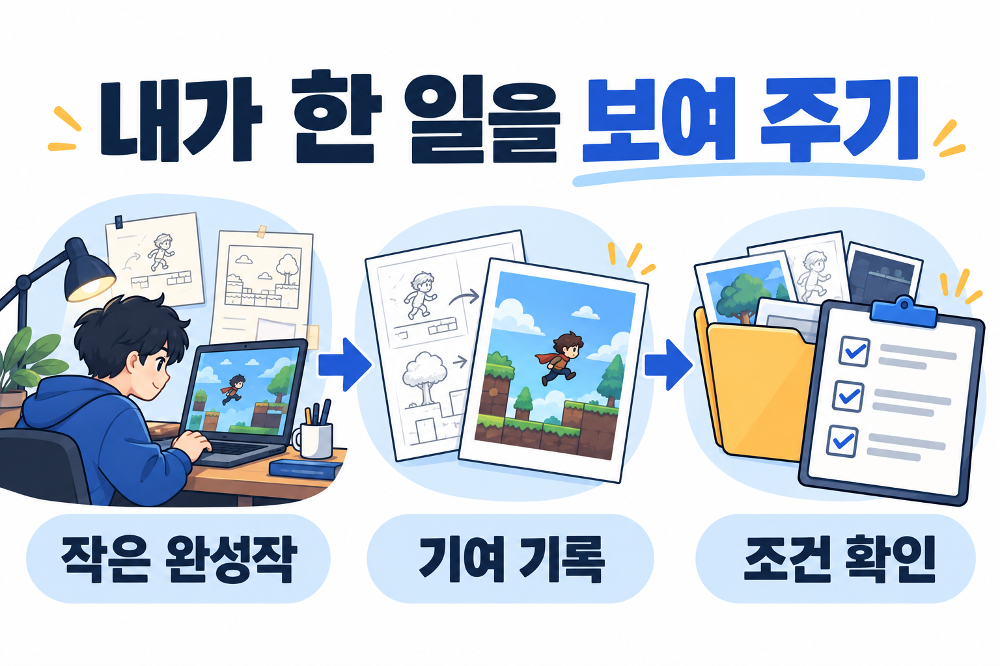
내가 한 일을 보여 주기완성작·본인 기여·지원 조건을 연결해 준비해요. 채용 결과를 보장하는 그림은 아니에요.작은 완성작 → 기여 기록 → 조건 확인 · image_gen 생성 개념도 · 실제 제품 화면·실측 결과가 아니에요.
서로 다른 진로의 준비 일정을 모은 안내예요. 모두 지원하라는 뜻은 아니며, 일정 변경 여부는 각 모집요강에서 확인하세요.
스타트업과 게임 스튜디오 채용도 함께 살펴봐요
대기업 공채 밖에서 찾은 게임사·스튜디오의 공식 직무 공고 4건이에요. 슈퍼센트는 공식 소개에서 2021년 설립을 명시해요. 각 회사의 현재 인원·법정 기업 규모·지분 관계는 별도로 검증하지 않았으므로 모두 소규모 독립 스타트업으로 묶지는 않아요. 스타트업 여부까지 공식 근거로 확인한 공고는 이번 조사에서 확보하지 못했어요.
확인일 2026.11.01 · 게시일 미표시 · ‘이번 주 새 공고’가 아닌 현재 공개된 모집 사례예요. 채용 페이지의 지원 버튼을 확인했으며 실제 지원은 하지 않았어요.
스파르타게임즈 · 2D 모바일 게임 기획자
신입~4년 · 정규직
공고 게시 중
왜 골랐나요?
신입 지원과 포트폴리오 필수를 명시하고, 직접 쓴 기획·분석 문서를 권장해요. 게임 분석과 기획 공부를 실제 제출물에 연결하기 좋아요.
자격·일정
경력 0~4년으로 표기돼 있어요. 마감일은 표시되지 않았고 채용 완료 시 조기 마감할 수 있어요. 고교 재학생·학력·입사 가능 시점은 별도 확인이 필요해요.
업무·제출물
콘텐츠·시스템·밸런스 기획과 플레이테스트를 다뤄요. 이력서와 포트폴리오는 필수예요. 포트폴리오에는 본인이 작성한 기획서·제안서·역기획서·분석서 등 문서를 제출하도록 권장해요. 서울 강남 근무, 수습 3개월로 안내해요.
준비해 볼 것
게임 하나의 규칙과 수치를 분석하고, 플레이테스트에서 무엇을 보고 왜 고쳤는지 정리해 보세요. 공고는 팀스파르타가 이 스튜디오를 지원한다고 밝혀요.
아트 직무도 단순한 그림 제작을 넘어 게임의 피드백과 최적화 역량을 요구하는 사례예요. 경력무관 표기와 별개로 관련 업무 1년 이상 또는 그에 준하는 실무 역량을 본문에서 요구해요.
소속·조건
쿡앱스 채용 페이지에 있지만 최종 합격 시 자회사 퍼플카우 소속이라고 명시해요. 계약직·정규직이 함께 표시돼 있어 실제 제안받을 형태를 확인해야 해요. 학력·고교 재학생·정확한 입사 시점은 미확인이에요.
준비해 볼 것
학습용 제안: 공격 적중·피격·상태 변화가 구별되는 효과를 게임에 적용하고, 셰이더와 화면 가독성, 성능을 확인한 과정을 정리해 보세요. 공고는 이력서·포트폴리오와 본인이 작업한 UI 아트워크 첨부를 요구해요. 이펙트 직무와 UI 제출물의 관계는 지원 전에 문의하세요. 페이지의 회사 주소는 경기 성남시 분당구 대왕판교로 660으로 표시돼 있어 실제 근무지도 확인해야 해요.
아래는 대학 학위 과정과 구분한 제작·기술·창업 교육이에요. 수료생 배출이나 기업 이름만으로 취업 효과를 판단하지 않았어요. 교육 내용, 시간 부담, 비용, 본인이 만들 결과물을 기준으로 골랐어요.
크래프톤 정글 두 과정의 목적 비교 · 공식 과정 설명 · 확인일 2026.11.01
Game Lab 7기
Game Tech Lab 5기
게임 제작·출시 기획, 게임잼, 팀 제작, 플레이테스트와 QA, Steam 출시를 다뤄요.
C++·게임 엔진 자체 엔진 구현, 그래픽스·Unreal 응용, Fab에 공개할 결과물 제작을 다뤄요.
기획과 개발을 함께 경험하고 완성작을 만들고 싶은 사람에게 살펴볼 만해요.
C++에 익숙하고 엔진의 동작 원리와 구현을 깊게 공부하고 싶은 사람에게 살펴볼 만해요.
크래프톤 정글 · 다음 기수 일정과 비용
모집 예정 · 사전 알림
모집·교육
두 과정 모두 2026.12.28~2027.1.17 접수, 2027.3.2~8.18 교육 예정이에요. 아직 원서 접수 중이 아니에요. 과정별 입학시험·인터뷰 날짜는 달라요.
비용·생활
일반 참가비 300만원, K-디지털 트레이닝 참여 시 자부담금 60만원으로 현재 안내해요. 지원 대상·개인별 적용 자격과 추가 식비·생활비·환불 조건은 별도로 확인하세요. 용인 캠퍼스에서 24주 합숙하는 과정이에요.
지원 전 확인
Game Lab FAQ는 학력 제한 없음, 주 6일 풀타임, 다른 일정과 병행 불가를 안내해요. 학력 제한 없음이 고교 수업과 병행 가능하다는 뜻은 아니에요. 미성년자·재학생과 KDT 적용 자격은 운영진에 확인해야 해요. Game Tech Lab의 세부 자격을 Game Lab과 같다고 추정하지 않아요.
선발·준비
과정 페이지는 지원서·1분 자기소개 영상 → 학습자료 → 입학시험 → 인터뷰를 안내해요. 선택한 과정의 기초 학습과 내가 만든 결과물을 정리해 두세요. 취업이나 크래프톤 입사를 보장하는 과정으로 소개하지 않아요.
교육 결과물 참고 · Game Lab 5기 게임 소개출처: 크래프톤 정글 · 5기 게임 소개, 2026.7.27 게시. 10개 게임의 7/31·일부 8/14 출시 계획을 소개한 기존 참고 자료예요. 이번 주 새 출시나 수료생 전체의 성과로 집계하지 않아요.
교육에서 어떤 결과물을 만드는지 궁금할 때 볼 자료예요. 공식 글의 게임별 Steam 링크와 Game Lab Steam 작품 목록에서 실제 공개 상태를 다시 확인하세요. 이 리포트에서 게임을 직접 플레이하거나 취업 성과를 검증하지는 않았어요.
창업 교육 참고 · 경기게임아카데미 15기
게임 개발팀 창업을 준비할 때 살펴볼 과정
접수는 4/15 15시에 마감됐고, 사업 기간은 5/1~10/31이었어요. 경기콘텐츠진흥원 공식 공고는 4인 이하 팀, 경기도 신규 창업 또는 조건에 맞는 이전, 교육 출석률 80% 등의 요건을 안내해요. 팀당 프로젝트 지원금 600만원, 멘토링·공용 개발 공간 등을 소개해요.
선정 이유: 취업 준비와 다른 ‘팀 창업’ 경로를 보여 주는 참고 사례예요. 지원금은 누구나 받는 교육비가 아니며 선발·집행 조건이 있어요. 차기 기수의 일정·비용·연령·재학생 조건은 미확인이에요. 다음 공고를 기다리며 팀 역할과 게임 사업계획서를 정리해 볼 수 있어요.
새 소식이 적으면 확인한 범위와 변화가 없다는 사실을 밝혀요. 지난 기사를 새 소식처럼 채우지 않아요.
매주 함께 읽는 심층 분석
심층 분석에서 살펴볼 내용
한 게임의 시스템 역설계
비교 사례와 실패 가설
직무 요구와 포트폴리오 연결
내 게임에 적용해 볼 개선안
매주 토요일 오전 8시에 리포트 제작을 시작하고, 검수와 공개 배포를 마친 뒤 링크를 보내요. 준비가 끝나지 않았다면 이전 리포트나 빈 페이지를 대신 보내지 않아요.
프로젝트를 진행하며 더 살펴볼 주제예요
주제
내 프로젝트에 연결할 질문
협업과 버전 관리
다른 사람이 변경을 이해하고, 문제 발생 전 상태로 되돌릴 수 있나요?
플레이테스트와 접근성
처음 보는 사람, 작은 화면, 다른 입력 환경에서도 핵심 정보를 읽을 수 있나요?
출시와 스토어 설명
짧은 영상과 소개 문장으로 첫 행동과 기대 경험을 전달할 수 있나요?
AI 에셋·콘텐츠 기록
어떤 도구와 출처를 썼고 무엇이 최종 게임에 포함되는지 설명할 수 있나요?
Steam의 콘텐츠 설문은 플레이어가 소비하는 AI 생성 콘텐츠와 실행 중 생성 콘텐츠를 구분해요. 개발 과정에서 효율을 높이려고 쓴 도구와 최종 콘텐츠를 같은 항목으로 묶지 말고, 출시 시점의 문서를 다시 확인해요. 현재 공식 문서
더 읽고 볼 자료
게임 개발에 참고할 한국어 기사와 영상
기존 기사와 영상은 2026.10.31에 확인했어요. AI 게임 제작 채널 19곳과 개별 참고 영상 3편은 11월 2일에 추가 조사해 아래에 따로 모았어요. 최신 자료와 배경 자료를 구분했고, 기사 보도·공식 설명·실험 결과를 같은 근거로 취급하지 않아요. 영상 추천은 제목과 공개 정보 확인을 바탕으로 했으며 전체 시청이나 실습 검증을 뜻하지 않아요.
AI 1인 게임 개발 도전 · 채널 19곳
2026.11.02 추가 조사 · 10월 31일 발행 뒤 보완한 자료예요.
AI로 게임을 만들며 무엇을 맡기고, 어디에서 직접 판단하는지 살펴볼 채널들이에요. 주시 채널 19곳의 관련 영상과 사용자가 따로 추천한 콘텐츠 3편을 모았어요. 선정 이유는 제작 과정을 배울 수 있다는 점이며 인기 순위는 아니에요.
‘100% AI’와 ‘1인 제작’은 영상별로 확인해요
AI 코딩, 이미지·음악 생성, 기존 에셋 사용은 서로 달라요. 사람의 기획·수정·검수도 함께 봐야 해요. 아래 자료는 제목·공개 설명·게시 정보를 확인했으며 전체 시청이나 게임 실행으로 제작 비율을 검증한 목록은 아니에요. 둘이궁리는 부부 협업 사례로 구분했어요.
확인 기준일 2026.11.02 · 최근 7일을 우선하고 필요한 경우 30일·90일로 범위를 넓혔어요. 데브의 5월 영상은 사용자가 요청한 채널의 배경 참고로 별도 표시했어요. 제작자의 자기 보고와 편집자의 시청 질문을 구분했어요. 연세의 게임개발의 pixelfx 소개 영상도 함께 참고하세요. 영상별 출처·AI 활용 범위